Altering Output Neurons
Contents
Altering Output Neurons¶
Work in progress.
In this notebook I experimented with several ways for the output neurons to encode output:
Original classification (oc) model
Uses average membrane potential of output neurons to approximate class probabilities
Maximum-over-time (max) model
Uses maximum membrane potential of output neurons to approximate class probabilities
Firing rate (fr) model
Output neurons are spiking neurons
Uses the average firing rate per time step of each output neuron to approximate class probabilities
Experiments:
Each model was trained 10 times for both the 20ms and 2ms membrane time constant case
All other hyperparameters are the same as the oc model in the starting notebook
Findings:
In 20ms case, fr model is the best, with similar median and smaller fluctuation when compared with oc
In 2ms case, oc is still the best among the three
Max model does not fit well for this task, performing the worst in all cases
import os
import numpy as np
import matplotlib.pyplot as plt
from matplotlib.gridspec import GridSpec
import torch
import torch.nn as nn
import torch.nn.functional as F
dtype = torch.float
# Check whether a GPU is available
if torch.cuda.is_available():
device = torch.device("cuda")
else:
device = torch.device("cpu")
my_computer_is_slow = True # set this to True if using Colab
# Change this to your own path
from google.colab import drive
drive.mount('/content/drive', force_remount=True)
import os
os.chdir('/content/drive/Shareddrives/SNN_sound_localization/Results_stage2/oc_vs_fr')
# import os
# os.chdir('/root/research/SR/Results_stage2')
import pandas as pd
import seaborn as sns
from ast import literal_eval
Mounted at /content/drive
!ls
oc_vs_fr_acc.png oc_vs_fr_err.png saved_results
oc_vs_fr_acc.svg oc_vs_fr_err.svg wd
Original Code From the Starting Notebook¶
Sound localization stimuli¶
The following function creates a set of stimuli that can be used for training or testing. We have two ears (0 and 1), and ear 1 will get a version of the signal delayed by an IPD we can write as \(\alpha\) in equations (ipd in code). The basic signal is a sine wave as in the previous notebook, made positive, so \((1/2)(1+\sin(\theta)\). In addition, for each ear there will be \(N_a\) neurons per ear (anf_per_ear because these are auditory nerve fibres). Each neuron generates Poisson spikes at a certain firing rate, and these Poisson spike trains are independent. In addition, since it is hard to train delays, we seed it with uniformly distributed delays from a minimum of 0 to a maximum of \(\pi/2\) in each ear, so that the differences between the two ears can cover the range of possible IPDs (\(-\pi/2\) to \(\pi/2\)). We do this directly by adding a phase delay to each neuron. So for ear \(i\in\{0,1\}\) and neuron \(j\) at time \(t\) the angle \(\theta=2\pi f t+i\alpha+j\pi/2N_a\). Finally, we generate Poisson spike trains with a rate \(R_\mathrm{max}((1/2)(1+\sin(\theta)))^k\). \(R_\mathrm{max}\) (rate_max) is the maximum instantaneous firing rate, and \(k\) (envelope_power) is a constant that sharpens the envelope. The higher \(R_\mathrm{max}\) and \(k\) the easier the problem (try it out on the cell below to see why).
Here’s a picture of the architecture for the stimuli:

The functions below return two arrays ipd and spikes. ipd is an array of length num_samples that gives the true IPD, and spikes is an array of 0 (no spike) and 1 (spike) of shape (num_samples, duration_steps, 2*anf_per_ear), where duration_steps is the number of time steps there are in the stimulus.
# Not using Brian so we just use these constants to make equations look nicer below
second = 1
ms = 1e-3
Hz = 1
# Stimulus and simulation parameters
dt = 1*ms # large time step to make simulations run faster for tutorial
anf_per_ear = 100 # repeats of each ear with independent noise
envelope_power = 2 # higher values make sharper envelopes, easier
rate_max = 600*Hz # maximum Poisson firing rate
f = 20*Hz # stimulus frequency
duration = .1*second # stimulus duration
duration_steps = int(np.round(duration/dt))
input_size = 2*anf_per_ear
# Generate an input signal (spike array) from array of true IPDs
def input_signal(ipd):
num_samples = len(ipd)
T = np.arange(duration_steps)*dt # array of times
phi = 2*np.pi*(f*T+np.random.rand()) # array of phases corresponding to those times with random offset
# each point in the array will have a different phase based on which ear it is
# and its delay
theta = np.zeros((num_samples, duration_steps, 2*anf_per_ear))
# for each ear, we have anf_per_ear different phase delays from to pi/2 so
# that the differences between the two ears can cover the full range from -pi/2 to pi/2
phase_delays = np.linspace(0, np.pi/2, anf_per_ear)
# now we set up these theta to implement that. Some numpy vectorisation logic here which looks a little weird,
# but implements the idea in the text above.
theta[:, :, :anf_per_ear] = phi[np.newaxis, :, np.newaxis]+phase_delays[np.newaxis, np.newaxis, :]
theta[:, :, anf_per_ear:] = phi[np.newaxis, :, np.newaxis]+phase_delays[np.newaxis, np.newaxis, :]+ipd[:, np.newaxis, np.newaxis]
# now generate Poisson spikes at the given firing rate as in the previous notebook
spikes = np.random.rand(num_samples, duration_steps, 2*anf_per_ear)<rate_max*dt*(0.5*(1+np.sin(theta)))**envelope_power
return spikes
# Generate some true IPDs from U(-pi/2, pi/2) and corresponding spike arrays
def random_ipd_input_signal(num_samples, tensor=True):
ipd = np.random.rand(num_samples)*np.pi-np.pi/2 # uniformly random in (-pi/2, pi/2)
spikes = input_signal(ipd)
if tensor:
ipd = torch.tensor(ipd, device=device, dtype=dtype)
spikes = torch.tensor(spikes, device=device, dtype=dtype)
return ipd, spikes
# Plot a few just to show how it looks
ipd, spikes = random_ipd_input_signal(8)
spikes = spikes.cpu()
plt.figure(figsize=(10, 4), dpi=100)
for i in range(8):
plt.subplot(2, 4, i+1)
plt.imshow(spikes[i, :, :].T, aspect='auto', interpolation='nearest', cmap=plt.cm.gray_r)
plt.title(f'True IPD = {int(ipd[i]*180/np.pi)} deg')
if i>=4:
plt.xlabel('Time (steps)')
if i%4==0:
plt.ylabel('Input neuron index')
plt.tight_layout()

Now the aim is to take these input spikes and infer the IPD. We can do this either by discretising and using a classification approach, or with a regression approach. For the moment, let’s try it with a classification approach.
Classification approach¶
We discretise the IPD range of \([-\pi/2, \pi/2]\) into \(N_c\) (num_classes) equal width segments. Replace angle \(\phi\) with the integer part (floor) of \((\phi+\pi/2)N_c/\pi\). We also convert the arrays into PyTorch tensors for later use. The algorithm will now guess the index \(i\) of the segment, converting that to the midpoint of the segment \(\phi_i=a+(i+1/2)(b-a)/N_c\) when needed.
The algorithm will work by outputting a length \(N_c\) vector \(y\) and the index of the maximum value of y will be the guess as to the class (1-hot encoding), i.e. \(i_\mathrm{est}=\mathrm{argmax}_i y_i\). We will perform the training with a softmax and negative loss likelihood loss, which is a standard approach in machine learning.
# classes at 15 degree increments
num_classes = 180//15
print(f'Number of classes = {num_classes}')
def discretise(ipds):
return ((ipds+np.pi/2)*num_classes/np.pi).long() # assumes input is tensor
def continuise(ipd_indices): # convert indices back to IPD midpoints
return (ipd_indices+0.5)/num_classes*np.pi-np.pi/2
Number of classes = 12
Membrane only (no spiking neurons)¶
Before we get to spiking, we’re going to warm up with a non-spiking network that shows some of the features of the full model but without any coincidence detection, it can’t do the task. We basically create a neuron model that has everything except spiking, so the membrane potential dynamics are there and it takes spikes as input. The neuron model we’ll use is just the LIF model we’ve already seen. We’ll use a time constant \(\tau\) of 20 ms, and we pre-calculate a constant \(\alpha=\exp(-dt/\tau)\) so that updating the membrane potential \(v\) is just multiplying by \(\alpha\) (as we saw in the first notebook). We store the input spikes in a vector \(s\) of 0s and 1s for each time step, and multiply by the weight matrix \(W\) to get the input, i.e. \(v\leftarrow \alpha v+Ws\).
We initialise the weight matrix \(W\) uniformly with bounds proportionate to the inverse square root of the number of inputs (fairly standard, and works here).
The output of this will be a vector of \(N_c\) (num_classes) membrane potential traces. We sum these traces over time and use this as the output vector (the largest one will be our prediction of the class and therefore the IPD).

# Weights and uniform weight initialisation
def init_weight_matrix():
# Note that the requires_grad=True argument tells PyTorch that we'll be computing gradients with
# respect to the values in this tensor and thereby learning those values. If you want PyTorch to
# learn some gradients, make sure it has this on.
W = nn.Parameter(torch.empty((input_size, num_classes), device=device, dtype=dtype, requires_grad=True))
fan_in, _ = nn.init._calculate_fan_in_and_fan_out(W)
bound = 1 / np.sqrt(fan_in)
nn.init.uniform_(W, -bound, bound)
return W
# Run the simulation
def membrane_only(input_spikes, W, tau=20*ms):
# Input has shape (batch_size, duration_steps, input_size)
v = torch.zeros((batch_size, num_classes), device=device, dtype=dtype)
# v_rec will store the membrane in each time step
v_rec = [v]
# Batch matrix multiplication all time steps
# Equivalent to matrix multiply input_spikes[b, :, :] x W for all b, but faster
h = torch.einsum("abc,cd->abd", (input_spikes, W))
# precalculate multiplication factor
alpha = np.exp(-dt/tau)
# Update membrane and spikes one time step at a time
for t in range(duration_steps - 1):
v = alpha*v + h[:, t, :]
v_rec.append(v)
# return the recorded membrane potentials stacked into a single tensor
v_rec = torch.stack(v_rec, dim=1) # (batch_size, duration_steps, num_classes)
return v_rec
Training¶
We train this by dividing the input data into batches and computing gradients across batches. In this notebook, batch and data size is small so that it can be run on a laptop in a couple of minutes, but normally you’d use larger batches and more data. Let’s start with the data.
# Parameters for training. These aren't optimal, but instead designed
# to give a reasonable result in a small amount of time for the tutorial!
if my_computer_is_slow:
batch_size = 64
n_training_batches = 64
else:
batch_size = 128
n_training_batches = 128
n_testing_batches = 32
num_samples = batch_size*n_training_batches
# Generator function iterates over the data in batches
# We randomly permute the order of the data to improve learning
def data_generator(ipds, spikes):
perm = torch.randperm(spikes.shape[0])
spikes = spikes[perm, :, :]
ipds = ipds[perm]
n, _, _ = spikes.shape
n_batch = n//batch_size
for i in range(n_batch):
x_local = spikes[i*batch_size:(i+1)*batch_size, :, :]
y_local = ipds[i*batch_size:(i+1)*batch_size]
yield x_local, y_local
Now we run the training. We generate the training data, initialise the weight matrix, set the training parameters, and run for a few epochs, printing the training loss as we go. We use the all-powerful Adam optimiser, softmax and negative log likelihood loss.
# Training parameters
nb_epochs = 10 # quick, it won't have converged
lr = 0.01 # learning rate
# Generate the training data
ipds, spikes = random_ipd_input_signal(num_samples)
# Initialise a weight matrix
W = init_weight_matrix()
# Optimiser and loss function
optimizer = torch.optim.Adam([W], lr=lr)
log_softmax_fn = nn.LogSoftmax(dim=1)
loss_fn = nn.NLLLoss() # negative log likelihood loss
print(f"Want loss for epoch 1 to be about {-np.log(1/num_classes):.2f}, multiply m by constant to get this")
loss_hist = []
for e in range(nb_epochs):
local_loss = []
for x_local, y_local in data_generator(discretise(ipds), spikes):
# Run network
output = membrane_only(x_local, W)
# Compute cross entropy loss
m = torch.sum(output, 1)*0.01 # Sum time dimension
loss = loss_fn(log_softmax_fn(m), y_local)
local_loss.append(loss.item())
# Update gradients
optimizer.zero_grad()
loss.backward()
optimizer.step()
loss_hist.append(np.mean(local_loss))
print("Epoch %i: loss=%.5f"%(e+1, np.mean(local_loss)))
# Plot the loss function over time
plt.plot(loss_hist)
plt.xlabel('Epoch')
plt.ylabel('Loss')
plt.tight_layout()
Want loss for epoch 1 to be about 2.48, multiply m by constant to get this
Epoch 1: loss=6.30739
Epoch 2: loss=3.12158
Epoch 3: loss=2.90743
Epoch 4: loss=2.64192
Epoch 5: loss=2.45578
Epoch 6: loss=2.40789
Epoch 7: loss=2.31922
Epoch 8: loss=2.16295
Epoch 9: loss=2.20243
Epoch 10: loss=2.05727
Analysis of results¶
Now we compute the training and test accuracy, and plot histograms and confusion matrices to understand the errors it’s making.
def analyse(ipds, spikes, label, run):
accs = []
ipd_true = []
ipd_est = []
confusion = np.zeros((num_classes, num_classes))
for x_local, y_local in data_generator(ipds, spikes):
y_local_orig = y_local
y_local = discretise(y_local)
output = run(x_local)
m = torch.sum(output, 1) # Sum time dimension
_, am = torch.max(m, 1) # argmax over output units
tmp = np.mean((y_local == am).detach().cpu().numpy()) # compare to labels
for i, j in zip(y_local.detach().cpu().numpy(), am.detach().cpu().numpy()):
confusion[j, i] += 1
ipd_true.append(y_local_orig.detach().cpu().numpy())
ipd_est.append(continuise(am.detach().cpu().numpy()))
accs.append(tmp)
ipd_true = np.hstack(ipd_true)
ipd_est = np.hstack(ipd_est)
abs_errors_deg = abs(ipd_true-ipd_est)*180/np.pi
print()
print(f"{label} classifier accuracy: {100*np.mean(accs):.1f}%")
print(f"{label} absolute error: {np.mean(abs_errors_deg):.1f} deg")
plt.figure(figsize=(10, 4), dpi=100)
plt.subplot(121)
plt.hist(ipd_true*180/np.pi, bins=num_classes, label='True')
plt.hist(ipd_est*180/np.pi, bins=num_classes, label='Estimated')
plt.xlabel("IPD")
plt.yticks([])
plt.legend(loc='best')
plt.title(label)
plt.subplot(122)
confusion /= np.sum(confusion, axis=0)[np.newaxis, :]
plt.imshow(confusion, interpolation='nearest', aspect='auto', origin='lower', extent=(-90, 90, -90, 90))
plt.xlabel('True IPD')
plt.ylabel('Estimated IPD')
plt.title('Confusion matrix')
plt.tight_layout()
print(f"Chance accuracy level: {100*1/num_classes:.1f}%")
run_func = lambda x: membrane_only(x, W)
analyse(ipds, spikes, 'Train', run=run_func)
ipds_test, spikes_test = random_ipd_input_signal(batch_size*n_testing_batches)
analyse(ipds_test, spikes_test, 'Test', run=run_func)
Chance accuracy level: 8.3%
Train classifier accuracy: 36.3%
Train absolute error: 16.1 deg
Test classifier accuracy: 9.4%
Test absolute error: 57.2 deg
This poor performance isn’t surprising because this network is not actually doing any coincidence detection, just a weighted sum of input spikes.
Spiking model¶
Next we’ll implement a version of the model with spikes to see how that changes performance. We’ll just add a single hidden feed-forward layer of spiking neurons between the input and the output layers. This layer will be spiking, so we need to use the surrogate gradient descent approach.

Surrogate gradient descent¶
First, this is the key part of surrogate gradient descent, a function where we override the computation of the gradient to replace it with a smoothed gradient. You can see that in the forward pass (method forward) it returns the Heaviside function of the input (takes value 1 if the input is >0) or value 0 otherwise. In the backwards pass, it returns the gradient of a sigmoid function.
beta = 5
class SurrGradSpike(torch.autograd.Function):
@staticmethod
def forward(ctx, input):
ctx.save_for_backward(input)
out = torch.zeros_like(input)
out[input > 0] = 1.0
return out
@staticmethod
def backward(ctx, grad_output):
input, = ctx.saved_tensors
# Original SPyTorch/SuperSpike gradient
# This seems to be a typo or error? But it works well
#grad = grad_output/(100*torch.abs(input)+1.0)**2
# Sigmoid
grad = grad_output*beta*torch.sigmoid(beta*input)*(1-torch.sigmoid(beta*input))
return grad
spike_fn = SurrGradSpike.apply
Updated model¶
The code for the updated model is very similar to the membrane only layer. First, for initialisation we now need two weight matrices, \(W_1\) from the input to the hidden layer, and \(W_2\) from the hidden layer to the output layer. Second, we run two passes of the loop that you saw above for the membrane only model.
The first pass computes the output spikes of the hidden layer. The second pass computes the output layer and is exactly the same as before except using the spikes from the hidden layer instead of the input layer.
For the first pass, we modify the function in two ways.
Firstly, we compute the spikes with the line s = spike_fn(v-1). In the forward pass this just computes the Heaviside function of \(v-1\), i.e. returns 1 if \(v>1\), otherwise 0, which is the spike threshold function for the LIF neuron. In the backwards pass, it returns a gradient of the smoothed version of the Heaviside function.
The other line we change is the membrane potential update line. Now, we multiply by \(1-s\) where (\(s=1\) if there was a spike in the previous time step, otherwise \(s=0\)), so that the membrane potential is reset to 0 after a spike (but in a differentiable way rather than just setting it to 0).
num_hidden = 30
# Weights and uniform weight initialisation
def init_weight_matrices():
# Input to hidden layer
W1 = nn.Parameter(torch.empty((input_size, num_hidden), device=device, dtype=dtype, requires_grad=True))
fan_in, _ = nn.init._calculate_fan_in_and_fan_out(W)
bound = 1 / np.sqrt(fan_in)
nn.init.uniform_(W1, -bound, bound)
# Hidden layer to output
W2 = nn.Parameter(torch.empty((num_hidden, num_classes), device=device, dtype=dtype, requires_grad=True))
fan_in, _ = nn.init._calculate_fan_in_and_fan_out(W)
bound = 1 / np.sqrt(fan_in)
nn.init.uniform_(W2, -bound, bound)
return W1, W2
# Run the simulation
def snn(input_spikes, W1, W2, tau=20*ms):
# First layer: input to hidden
v = torch.zeros((batch_size, num_hidden), device=device, dtype=dtype)
s = torch.zeros((batch_size, num_hidden), device=device, dtype=dtype)
s_rec = [s]
h = torch.einsum("abc,cd->abd", (input_spikes, W1))
alpha = np.exp(-dt/tau)
for t in range(duration_steps - 1):
new_v = (alpha*v + h[:, t, :])*(1-s) # multiply by 0 after a spike
s = spike_fn(v-1) # threshold of 1
v = new_v
s_rec.append(s)
s_rec = torch.stack(s_rec, dim=1)
# Second layer: hidden to output
v = torch.zeros((batch_size, num_classes), device=device, dtype=dtype)
s = torch.zeros((batch_size, num_classes), device=device, dtype=dtype)
v_rec = [v]
h = torch.einsum("abc,cd->abd", (s_rec, W2))
alpha = np.exp(-dt/tau)
for t in range(duration_steps - 1):
v = alpha*v + h[:, t, :]
v_rec.append(v)
v_rec = torch.stack(v_rec, dim=1)
# Return recorded membrane potential of output
return v_rec
Training and analysing¶
We train it as before, except that we modify the functions to take the two weight matrices into account.
# Training parameters
nb_epochs = 10 # quick, it won't have converged
lr = 0.01 # learning rate
# Generate the training data
ipds, spikes = random_ipd_input_signal(num_samples)
# Initialise a weight matrices
W1, W2 = init_weight_matrices()
# Optimiser and loss function
optimizer = torch.optim.Adam([W1, W2], lr=lr)
log_softmax_fn = nn.LogSoftmax(dim=1)
loss_fn = nn.NLLLoss()
print(f"Want loss for epoch 1 to be about {-np.log(1/num_classes):.2f}, multiply m by constant to get this")
loss_hist = []
for e in range(nb_epochs):
local_loss = []
for x_local, y_local in data_generator(discretise(ipds), spikes):
# Run network
output = snn(x_local, W1, W2)
# Compute cross entropy loss
m = torch.mean(output, 1) # Mean across time dimension
loss = loss_fn(log_softmax_fn(m), y_local)
local_loss.append(loss.item())
# Update gradients
optimizer.zero_grad()
loss.backward()
optimizer.step()
loss_hist.append(np.mean(local_loss))
print("Epoch %i: loss=%.5f"%(e+1, np.mean(local_loss)))
# Plot the loss function over time
plt.plot(loss_hist)
plt.xlabel('Epoch')
plt.ylabel('Loss')
plt.tight_layout()
Want loss for epoch 1 to be about 2.48, multiply m by constant to get this
Epoch 1: loss=2.07820
Epoch 2: loss=1.38058
Epoch 3: loss=1.08499
Epoch 4: loss=0.92522
Epoch 5: loss=0.85050
Epoch 6: loss=0.77508
Epoch 7: loss=0.69778
Epoch 8: loss=0.64543
Epoch 9: loss=0.64462
Epoch 10: loss=0.61308
You might already see that the loss functions are lower than before, so maybe performance is better? Let’s see.
# Analyse
print(f"Chance accuracy level: {100*1/num_classes:.1f}%")
run_func = lambda x: snn(x, W1, W2)
analyse(ipds, spikes, 'Train', run=run_func)
ipds_test, spikes_test = random_ipd_input_signal(batch_size*n_testing_batches)
analyse(ipds_test, spikes_test, 'Test', run=run_func)
Chance accuracy level: 8.3%
Train classifier accuracy: 78.2%
Train absolute error: 5.2 deg
Test classifier accuracy: 60.7%
Test absolute error: 7.8 deg
Yes! Performance is much better and now the confusion matrices look more like what you’d expect too. Let’s take a look at the weight matrices.
plt.figure(figsize=(10, 4), dpi=100)
plt.subplot(121)
plt.imshow(W1.detach().cpu().numpy(), interpolation='nearest', aspect='auto', origin='lower')
plt.ylabel('Input neuron index')
plt.xlabel('Hidden layer neuron index')
plt.colorbar(label="Weight")
plt.subplot(122)
plt.imshow(W2.detach().cpu().numpy(), interpolation='nearest', aspect='auto', origin='lower')
plt.ylabel('Hidden layer neuron index')
plt.xlabel('Output neuron index')
plt.colorbar(label="Weight")
plt.tight_layout()
Hmm, hard to interpret.
Here’s what I’ve got so far…
w1 = W1.detach().cpu().numpy()
w2 = W2.detach().cpu().numpy()
# for each column of w1, compute the weighted mean and re-order according to that
A = np.arange(w1.shape[0])[:, None]
weighted_mean = np.mean((A*w1), axis=0)
weighted_mean[np.max(np.abs(w1), axis=0)<.5] = np.inf
I = np.argsort(weighted_mean)
w1 = w1[:, I]
w2 = w2[I, :]
# Plot the re-ordered weight matrices
plt.figure(figsize=(10, 3), dpi=100)
plt.subplot(131)
plt.imshow(w1, interpolation='nearest', aspect='auto', origin='lower')
plt.ylabel('Input neuron index')
plt.xlabel('Hidden layer neuron index')
plt.title('$W_1$')
plt.colorbar()
plt.subplot(132)
plt.imshow(w2, interpolation='nearest', aspect='auto', origin='lower')
plt.ylabel('Hidden layer neuron index')
plt.xlabel('Output neuron index')
plt.title('$W_2$')
plt.colorbar()
plt.subplot(133)
plt.imshow(w1@w2, interpolation='nearest', aspect='auto', origin='lower')
plt.ylabel('Input neuron index')
plt.xlabel('Output neuron index')
plt.title('$W_1W_2$')
plt.colorbar()
plt.tight_layout()
# Plot some sample weights for hidden neurons
I_nz, = (np.max(np.abs(w1), axis=0)>.5).nonzero()
plt.figure(figsize=(10, 5), dpi=80)
phi = np.linspace(-np.pi/2, np.pi/2, w1.shape[0]//2)
for i, j in list(enumerate(I_nz))[:15]:
plt.subplot(3, 5, i+1)
plt.plot(phi*180/np.pi, w1[:w1.shape[0]//2, j], label="Left ear")
plt.plot(phi*180/np.pi, w1[w1.shape[0]//2:, j], label="Right ear")
plt.suptitle("Individual $W_1$ weights")
plt.legend(loc='best')
plt.xlabel('Phase delay (deg)')
plt.tight_layout()
Experiments¶
Code necessary to run experiments¶
Note: I copied some cells from previous parts that are necessary for experiments here so that I don’t have to look for and run them from the part above again and again.
Necessary constants
# Not using Brian so we just use these constants to make equations look nicer below
second = 1
ms = 1e-3
Hz = 1
# Stimulus and simulation parameters
dt = 1*ms # large time step to make simulations run faster for tutorial
anf_per_ear = 100 # repeats of each ear with independent noise
envelope_power = 2 # higher values make sharper envelopes, easier
rate_max = 600*Hz # maximum Poisson firing rate
f = 20*Hz # stimulus frequency
duration = .1*second # stimulus duration
duration_steps = int(np.round(duration/dt))
input_size = 2*anf_per_ear
Generating input signal
# Generate an input signal (spike array) from array of true IPDs
def input_signal(ipd):
num_samples = len(ipd)
T = np.arange(duration_steps)*dt # array of times
phi = 2*np.pi*(f*T+np.random.rand()) # array of phases corresponding to those times with random offset
# each point in the array will have a different phase based on which ear it is
# and its delay
theta = np.zeros((num_samples, duration_steps, 2*anf_per_ear))
# for each ear, we have anf_per_ear different phase delays from to pi/2 so
# that the differences between the two ears can cover the full range from -pi/2 to pi/2
phase_delays = np.linspace(0, np.pi/2, anf_per_ear)
# now we set up these theta to implement that. Some numpy vectorisation logic here which looks a little weird,
# but implements the idea in the text above.
theta[:, :, :anf_per_ear] = phi[np.newaxis, :, np.newaxis]+phase_delays[np.newaxis, np.newaxis, :]
theta[:, :, anf_per_ear:] = phi[np.newaxis, :, np.newaxis]+phase_delays[np.newaxis, np.newaxis, :]+ipd[:, np.newaxis, np.newaxis]
# now generate Poisson spikes at the given firing rate as in the previous notebook
spikes = np.random.rand(num_samples, duration_steps, 2*anf_per_ear)<rate_max*dt*(0.5*(1+np.sin(theta)))**envelope_power
return spikes
# Generate some true IPDs from U(-pi/2, pi/2) and corresponding spike arrays
def random_ipd_input_signal(num_samples, tensor=True):
ipd = np.random.rand(num_samples)*np.pi-np.pi/2 # uniformly random in (-pi/2, pi/2)
spikes = input_signal(ipd)
if tensor:
ipd = torch.tensor(ipd, device=device, dtype=dtype)
spikes = torch.tensor(spikes, device=device, dtype=dtype)
return ipd, spikes
# Plot a few just to show how it looks
ipd, spikes = random_ipd_input_signal(8)
spikes = spikes.cpu()
plt.figure(figsize=(10, 4), dpi=100)
for i in range(8):
plt.subplot(2, 4, i+1)
plt.imshow(spikes[i, :, :].T, aspect='auto', interpolation='nearest', cmap=plt.cm.gray_r)
plt.title(f'True IPD = {int(ipd[i]*180/np.pi)} deg')
if i>=4:
plt.xlabel('Time (steps)')
if i%4==0:
plt.ylabel('Input neuron index')
plt.tight_layout()
# Parameters for training. These aren't optimal, but instead designed
# to give a reasonable result in a small amount of time for the tutorial!
if my_computer_is_slow:
batch_size = 64
n_training_batches = 64
else:
batch_size = 128
n_training_batches = 128
n_testing_batches = 32
num_samples = batch_size*n_training_batches
# Generator function iterates over the data in batches
# We randomly permute the order of the data to improve learning
def data_generator(ipds, spikes):
perm = torch.randperm(spikes.shape[0])
spikes = spikes[perm, :, :]
ipds = ipds[perm]
n, _, _ = spikes.shape
n_batch = n//batch_size
for i in range(n_batch):
x_local = spikes[i*batch_size:(i+1)*batch_size, :, :]
y_local = ipds[i*batch_size:(i+1)*batch_size]
yield x_local, y_local
Surrogate Gradient Descent
beta = 5
class SurrGradSpike(torch.autograd.Function):
@staticmethod
def forward(ctx, input):
ctx.save_for_backward(input)
out = torch.zeros_like(input)
out[input > 0] = 1.0
return out
@staticmethod
def backward(ctx, grad_output):
input, = ctx.saved_tensors
# Original SPyTorch/SuperSpike gradient
# This seems to be a typo or error? But it works well
#grad = grad_output/(100*torch.abs(input)+1.0)**2
# Sigmoid
grad = grad_output*beta*torch.sigmoid(beta*input)*(1-torch.sigmoid(beta*input))
return grad
spike_fn = SurrGradSpike.apply
OOP way of SNN model
def snn_init(shape):
W = nn.Parameter(torch.empty((shape), device=device, dtype=dtype, requires_grad=True))
fan_in, _ = nn.init._calculate_fan_in_and_fan_out(W)
bound = 1 / np.sqrt(fan_in)
nn.init.uniform_(W, -bound, bound)
return W
class snn_layer(nn.Module):
def __init__(self, in_size, out_size, spike=True, tau=20*ms):
super().__init__()
self.in_size = in_size
self.out_size = out_size
self.spike = spike
self.tau = tau
self.W = snn_init((in_size, out_size))
def forward(self, input_spikes, fn=spike_fn):
batch_size = input_spikes.shape[0]
v = torch.zeros((batch_size, self.out_size), device=device, dtype=dtype)
s = torch.zeros((batch_size, self.out_size), device=device, dtype=dtype)
h = torch.einsum("abc,cd->abd", (input_spikes, self.W))
alpha = np.exp(-dt/self.tau)
if self.spike: # spiking neuron
s_rec = [s]
for t in range(duration_steps - 1):
new_v = (alpha*v + h[:, t, :])*(1-s) # multiply by 0 after a spike
s = fn(v-1) # threshold of 1
v = new_v
s_rec.append(s)
s_rec = torch.stack(s_rec, dim=1)
return s_rec
else: # membrane only
v_rec = [v]
for t in range(duration_steps - 1):
v = alpha*v + h[:, t, :]
v_rec.append(v)
v_rec = torch.stack(v_rec, dim=1)
return v_rec
Discretise input for classification
def discretise(ipds):
return ((ipds+np.pi/2)*num_classes/np.pi).long() # assumes input is tensor
def continuise(ipd_indices): # convert indices back to IPD midpoints
return (ipd_indices+0.5)/num_classes*np.pi-np.pi/2
Function to analyse classification results
def analyse(ipds, spikes, label, run):
accs = []
ipd_true = []
ipd_est = []
confusion = np.zeros((num_classes, num_classes))
for x_local, y_local in data_generator(ipds, spikes):
y_local_orig = y_local
y_local = discretise(y_local)
output = run(x_local)
m = torch.sum(output, 1) # Sum time dimension
_, am = torch.max(m, 1) # argmax over output units
tmp = np.mean((y_local == am).detach().cpu().numpy()) # compare to labels
for i, j in zip(y_local.detach().cpu().numpy(), am.detach().cpu().numpy()):
confusion[j, i] += 1
ipd_true.append(y_local_orig.detach().cpu().numpy())
ipd_est.append(continuise(am.detach().cpu().numpy()))
accs.append(tmp)
ipd_true = np.hstack(ipd_true)
ipd_est = np.hstack(ipd_est)
abs_errors_deg = abs(ipd_true-ipd_est)*180/np.pi
print()
print(f"{label} classifier accuracy: {100*np.mean(accs):.1f}%")
print(f"{label} absolute error: {np.mean(abs_errors_deg):.1f} deg")
# plt.figure(figsize=(10, 4), dpi=100)
# plt.subplot(121)
# plt.hist(ipd_true*180/np.pi, bins=num_classes, label='True')
# plt.hist(ipd_est*180/np.pi, bins=num_classes, label='Estimated')
# plt.xlabel("IPD")
# plt.yticks([])
# plt.legend(loc='best')
# plt.title(label)
# plt.subplot(122)
# confusion /= np.sum(confusion, axis=0)[np.newaxis, :]
# plt.imshow(confusion, interpolation='nearest', aspect='auto', origin='lower', extent=(-90, 90, -90, 90))
# plt.xlabel('True IPD')
# plt.ylabel('Estimated IPD')
# plt.title('Confusion matrix')
# plt.tight_layout()
return 100*np.mean(accs), np.mean(abs_errors_deg)
def analyse_reg(ipds, spikes, label, run):
ipd_true = []
ipd_est = []
for x_local, y_local in data_generator(ipds, spikes):
y_local_orig = y_local
output = run(x_local)
am = torch.mean(output, 1).flatten()
ipd_true.append(y_local_orig.detach().cpu().numpy())
ipd_est.append(am.detach().cpu().numpy())
ipd_true = np.hstack(ipd_true)
ipd_est = np.hstack(ipd_est)
abs_errors_deg = abs(ipd_true-ipd_est)*180/np.pi
print()
print(f"{label} absolute error: {np.mean(abs_errors_deg):.1f} deg")
return np.mean(abs_errors_deg)
Models¶
# classes at 15 degree increments
num_classes = 180//15
num_hidden = 30
print(f'Number of classes = {num_classes}')
class snn_original(nn.Module):
def __init__(self):
super().__init__()
# import ipdb;ipdb.set_trace()
self.layer1 = snn_layer(input_size, num_hidden)#, tau=1*ms)
self.layer2 = snn_layer(num_hidden, num_classes, spike=False)#, tau=1*ms)
def forward(self, input_spikes):
s_rec = self.layer1(input_spikes)
v_rec = self.layer2(s_rec)
return v_rec
class snn_original_2ms(nn.Module):
def __init__(self):
super().__init__()
# import ipdb;ipdb.set_trace()
self.layer1 = snn_layer(input_size, num_hidden, tau=2*ms)
self.layer2 = snn_layer(num_hidden, num_classes, spike=False, tau=2*ms)
def forward(self, input_spikes):
s_rec = self.layer1(input_spikes)
v_rec = self.layer2(s_rec)
return v_rec
Number of classes = 12
# classes at 15 degree increments
num_classes = 180//15
num_hidden = 30
print(f'Number of classes = {num_classes}')
class snn_fr(nn.Module):
def __init__(self):
super().__init__()
# import ipdb;ipdb.set_trace()
self.layer1 = snn_layer(input_size, num_hidden)
self.layer2 = snn_layer(num_hidden, num_classes)
def forward(self, input_spikes):
s_rec = self.layer1(input_spikes)
s_rec = self.layer2(s_rec)
return s_rec
class snn_fr_2ms(nn.Module):
def __init__(self):
super().__init__()
# import ipdb;ipdb.set_trace()
self.layer1 = snn_layer(input_size, num_hidden, tau=2*ms)
self.layer2 = snn_layer(num_hidden, num_classes, tau=2*ms)
def forward(self, input_spikes):
s_rec = self.layer1(input_spikes)
s_rec = self.layer2(s_rec)
return s_rec
Number of classes = 12
Visualization Codes¶
def analyse_vis(ipds, spikes, label, run):
accs = []
ipd_true = []
ipd_est = []
confusion = np.zeros((num_classes, num_classes))
for x_local, y_local in data_generator(ipds, spikes):
y_local_orig = y_local
y_local = discretise(y_local)
output = run(x_local)
m = torch.sum(output, 1) # Sum time dimension
_, am = torch.max(m, 1) # argmax over output units
tmp = np.mean((y_local == am).detach().cpu().numpy()) # compare to labels
for i, j in zip(y_local.detach().cpu().numpy(), am.detach().cpu().numpy()):
confusion[j, i] += 1
ipd_true.append(y_local_orig.detach().cpu().numpy())
ipd_est.append(continuise(am.detach().cpu().numpy()))
accs.append(tmp)
ipd_true = np.hstack(ipd_true)
ipd_est = np.hstack(ipd_est)
abs_errors_deg = abs(ipd_true-ipd_est)*180/np.pi
print()
print(f"{label} classifier accuracy: {100*np.mean(accs):.1f}%")
print(f"{label} absolute error: {np.mean(abs_errors_deg):.1f} deg")
plt.figure(figsize=(10, 4), dpi=100)
plt.subplot(121)
plt.hist(ipd_true*180/np.pi, bins=num_classes, label='True')
plt.hist(ipd_est*180/np.pi, bins=num_classes, label='Estimated')
plt.xlabel("IPD")
plt.yticks([])
plt.legend(loc='best')
plt.title(label)
plt.subplot(122)
confusion /= np.sum(confusion, axis=0)[np.newaxis, :]
plt.imshow(confusion, interpolation='nearest', aspect='auto', origin='lower', extent=(-90, 90, -90, 90))
plt.xlabel('True IPD')
plt.ylabel('Estimated IPD')
plt.title('Confusion matrix')
plt.tight_layout()
return 100*np.mean(accs), np.mean(abs_errors_deg)
def vis(W_list):
w1 = W_list[0].detach().cpu().numpy()
w2 = W_list[1].detach().cpu().numpy()
# for each column of w1, compute the weighted mean and re-order according to that
A = np.arange(w1.shape[0])[:, None]
weighted_mean = np.mean((A*w1), axis=0)
weighted_mean[np.max(np.abs(w1), axis=0)<.5] = np.inf
I = np.argsort(weighted_mean)
w1 = w1[:, I]
w2 = w2[I, :]
# Plot the re-ordered weight matrices
plt.figure(figsize=(10, 3), dpi=100)
plt.subplot(131)
plt.imshow(w1, interpolation='nearest', aspect='auto', origin='lower')
plt.ylabel('Input neuron index')
plt.xlabel('Hidden layer neuron index')
plt.title('$W_1$')
plt.colorbar()
plt.subplot(132)
plt.imshow(w2, interpolation='nearest', aspect='auto', origin='lower')
plt.ylabel('Hidden layer neuron index')
plt.xlabel('Output neuron index')
plt.title('$W_2$')
plt.colorbar()
plt.subplot(133)
plt.imshow(w1@w2, interpolation='nearest', aspect='auto', origin='lower')
plt.ylabel('Input neuron index')
plt.xlabel('Output neuron index')
plt.title('$W_1W_2$')
plt.colorbar()
plt.tight_layout()
# Plot some sample weights for hidden neurons
I_nz, = (np.max(np.abs(w1), axis=0)>.5).nonzero()
plt.figure(figsize=(10, 5), dpi=80)
phi = np.linspace(-np.pi/2, np.pi/2, w1.shape[0]//2)
for i, j in list(enumerate(I_nz))[:15]:
plt.subplot(3, 5, i+1)
plt.plot(phi*180/np.pi, w1[:w1.shape[0]//2, j], label="Left ear")
plt.plot(phi*180/np.pi, w1[w1.shape[0]//2:, j], label="Right ear")
plt.suptitle("Individual $W_1$ weights")
plt.legend(loc='best')
plt.xlabel('Phase delay (deg)')
plt.tight_layout()
Results¶
os.chdir('/root/research/SR/Results_stage2/oc_vs_fr')
Original Classification¶
# Training parameters
nb_epochs = 10 # quick, it won't have converged
lr = 0.01 # learning rate
train_acc = []
train_err = []
test_acc = []
test_err = []
for i in range(10):
# Generate the training data
ipds, spikes = random_ipd_input_signal(num_samples)
# Initialise a weight matrices
model = snn_original()
# Optimiser and loss function
optimizer = torch.optim.Adam(model.parameters(), lr=lr)
log_softmax_fn = nn.LogSoftmax(dim=1)
loss_fn = nn.NLLLoss()
print(f"Want loss for epoch 1 to be about {-np.log(1/num_classes):.2f}, multiply m by constant to get this")
loss_hist = []
for e in range(nb_epochs):
local_loss = []
for x_local, y_local in data_generator(discretise(ipds), spikes):
# Run network
output = model(x_local)
# Compute cross entropy loss
m = torch.mean(output, 1) # Mean across time dimension
loss = loss_fn(log_softmax_fn(m), y_local)
local_loss.append(loss.item())
# Update gradients
optimizer.zero_grad()
loss.backward()
optimizer.step()
loss_hist.append(np.mean(local_loss))
print("Epoch %i: loss=%.5f"%(e+1, np.mean(local_loss)))
# Plot the loss function over time
plt.plot(loss_hist)
plt.xlabel('Epoch')
plt.ylabel('Loss')
plt.tight_layout()
# Analyse
print(f"Chance accuracy level: {100*1/num_classes:.1f}%")
run_func = lambda x: model(x)
acc, err = analyse(ipds, spikes, 'Train', run=run_func)
train_acc.append(acc)
train_err.append(err)
ipds_test, spikes_test = random_ipd_input_signal(batch_size*n_testing_batches)
acc, err = analyse(ipds_test, spikes_test, 'Test', run=run_func)
test_acc.append(acc)
test_err.append(err)
res_dict = {'train_acc': train_acc, 'test_acc': test_acc, 'train_err': train_err, 'test_err': test_err}
np.save('saved_results/oc.npy', res_dict)
Want loss for epoch 1 to be about 2.48, multiply m by constant to get this
Epoch 1: loss=2.30230
Epoch 2: loss=1.44778
Epoch 3: loss=1.09132
Epoch 4: loss=0.91280
Epoch 5: loss=0.80248
Epoch 6: loss=0.74836
Epoch 7: loss=0.67611
Epoch 8: loss=0.65565
Epoch 9: loss=0.60655
Epoch 10: loss=0.55965
Chance accuracy level: 8.3%
Train classifier accuracy: 76.9%
Train absolute error: 5.2 deg
Test classifier accuracy: 66.4%
Test absolute error: 6.3 deg
Want loss for epoch 1 to be about 2.48, multiply m by constant to get this
Epoch 1: loss=2.47346
Epoch 2: loss=1.73753
Epoch 3: loss=1.31806
Epoch 4: loss=1.08091
Epoch 5: loss=0.95101
Epoch 6: loss=0.86727
Epoch 7: loss=0.81084
Epoch 8: loss=0.75728
Epoch 9: loss=0.74232
Epoch 10: loss=0.69324
Chance accuracy level: 8.3%
Train classifier accuracy: 77.1%
Train absolute error: 5.3 deg
Test classifier accuracy: 25.0%
Test absolute error: 30.9 deg
Want loss for epoch 1 to be about 2.48, multiply m by constant to get this
Epoch 1: loss=2.12104
Epoch 2: loss=1.26101
Epoch 3: loss=0.99096
Epoch 4: loss=0.85545
Epoch 5: loss=0.76997
Epoch 6: loss=0.70945
Epoch 7: loss=0.67392
Epoch 8: loss=0.62177
Epoch 9: loss=0.58624
Epoch 10: loss=0.55506
Chance accuracy level: 8.3%
Train classifier accuracy: 81.2%
Train absolute error: 4.8 deg
Test classifier accuracy: 43.2%
Test absolute error: 29.2 deg
Want loss for epoch 1 to be about 2.48, multiply m by constant to get this
Epoch 1: loss=2.14631
Epoch 2: loss=1.20166
Epoch 3: loss=0.93246
Epoch 4: loss=0.80638
Epoch 5: loss=0.72083
Epoch 6: loss=0.65647
Epoch 7: loss=0.63656
Epoch 8: loss=0.57304
Epoch 9: loss=0.53173
Epoch 10: loss=0.53101
Chance accuracy level: 8.3%
Train classifier accuracy: 77.6%
Train absolute error: 5.3 deg
Test classifier accuracy: 65.3%
Test absolute error: 6.5 deg
Want loss for epoch 1 to be about 2.48, multiply m by constant to get this
Epoch 1: loss=2.00829
Epoch 2: loss=1.18301
Epoch 3: loss=0.95123
Epoch 4: loss=0.84278
Epoch 5: loss=0.75725
Epoch 6: loss=0.70151
Epoch 7: loss=0.66731
Epoch 8: loss=0.61849
Epoch 9: loss=0.61753
Epoch 10: loss=0.59045
Chance accuracy level: 8.3%
Train classifier accuracy: 82.0%
Train absolute error: 4.8 deg
Test classifier accuracy: 52.4%
Test absolute error: 9.6 deg
Want loss for epoch 1 to be about 2.48, multiply m by constant to get this
Epoch 1: loss=2.05730
Epoch 2: loss=1.36346
Epoch 3: loss=1.13530
Epoch 4: loss=1.00824
Epoch 5: loss=0.92950
Epoch 6: loss=0.88064
Epoch 7: loss=0.83347
Epoch 8: loss=0.77994
Epoch 9: loss=0.74756
Epoch 10: loss=0.71461
Chance accuracy level: 8.3%
Train classifier accuracy: 77.0%
Train absolute error: 5.3 deg
Test classifier accuracy: 41.3%
Test absolute error: 11.4 deg
Want loss for epoch 1 to be about 2.48, multiply m by constant to get this
Epoch 1: loss=2.35310
Epoch 2: loss=1.72459
Epoch 3: loss=1.23175
Epoch 4: loss=1.00985
Epoch 5: loss=0.88888
Epoch 6: loss=0.85241
Epoch 7: loss=0.75736
Epoch 8: loss=0.71086
Epoch 9: loss=0.69708
Epoch 10: loss=0.67688
Chance accuracy level: 8.3%
Train classifier accuracy: 78.0%
Train absolute error: 5.1 deg
Test classifier accuracy: 51.8%
Test absolute error: 8.5 deg
Want loss for epoch 1 to be about 2.48, multiply m by constant to get this
Epoch 1: loss=2.23767
Epoch 2: loss=1.35868
Epoch 3: loss=1.07066
Epoch 4: loss=0.92129
Epoch 5: loss=0.83105
Epoch 6: loss=0.77032
Epoch 7: loss=0.70995
Epoch 8: loss=0.66596
Epoch 9: loss=0.62811
Epoch 10: loss=0.59548
Chance accuracy level: 8.3%
Train classifier accuracy: 78.0%
Train absolute error: 5.2 deg
Test classifier accuracy: 30.9%
Test absolute error: 14.4 deg
Want loss for epoch 1 to be about 2.48, multiply m by constant to get this
Epoch 1: loss=2.19264
Epoch 2: loss=1.36677
Epoch 3: loss=1.11540
Epoch 4: loss=0.98164
Epoch 5: loss=0.91029
Epoch 6: loss=0.83342
Epoch 7: loss=0.77361
Epoch 8: loss=0.74515
Epoch 9: loss=0.73537
Epoch 10: loss=0.68700
Chance accuracy level: 8.3%
Train classifier accuracy: 75.2%
Train absolute error: 5.5 deg
Test classifier accuracy: 27.4%
Test absolute error: 14.0 deg
Want loss for epoch 1 to be about 2.48, multiply m by constant to get this
Epoch 1: loss=2.46377
Epoch 2: loss=1.77466
Epoch 3: loss=1.36694
Epoch 4: loss=1.17316
Epoch 5: loss=1.05272
Epoch 6: loss=0.97872
Epoch 7: loss=0.90114
Epoch 8: loss=0.85341
Epoch 9: loss=0.80216
Epoch 10: loss=0.76964
Chance accuracy level: 8.3%
Train classifier accuracy: 77.9%
Train absolute error: 5.2 deg
Test classifier accuracy: 75.1%
Test absolute error: 5.3 deg
# Training parameters
nb_epochs = 10 # quick, it won't have converged
lr = 0.01 # learning rate
train_acc = []
train_err = []
test_acc = []
test_err = []
for i in range(10):
# Generate the training data
ipds, spikes = random_ipd_input_signal(num_samples)
# Initialise a weight matrices
model = snn_original_2ms()
# Optimiser and loss function
optimizer = torch.optim.Adam(model.parameters(), lr=lr)
log_softmax_fn = nn.LogSoftmax(dim=1)
loss_fn = nn.NLLLoss()
print(f"Want loss for epoch 1 to be about {-np.log(1/num_classes):.2f}, multiply m by constant to get this")
loss_hist = []
for e in range(nb_epochs):
local_loss = []
for x_local, y_local in data_generator(discretise(ipds), spikes):
# Run network
output = model(x_local)
# Compute cross entropy loss
m = torch.mean(output, 1) # Mean across time dimension
loss = loss_fn(log_softmax_fn(m), y_local)
local_loss.append(loss.item())
# Update gradients
optimizer.zero_grad()
loss.backward()
optimizer.step()
loss_hist.append(np.mean(local_loss))
print("Epoch %i: loss=%.5f"%(e+1, np.mean(local_loss)))
# Plot the loss function over time
plt.plot(loss_hist)
plt.xlabel('Epoch')
plt.ylabel('Loss')
plt.tight_layout()
# Analyse
print(f"Chance accuracy level: {100*1/num_classes:.1f}%")
run_func = lambda x: model(x)
acc, err = analyse(ipds, spikes, 'Train', run=run_func)
train_acc.append(acc)
train_err.append(err)
ipds_test, spikes_test = random_ipd_input_signal(batch_size*n_testing_batches)
acc, err = analyse(ipds_test, spikes_test, 'Test', run=run_func)
test_acc.append(acc)
test_err.append(err)
res_dict = {'train_acc': train_acc, 'test_acc': test_acc, 'train_err': train_err, 'test_err': test_err}
np.save('saved_results/oc_2ms.npy', res_dict)
Want loss for epoch 1 to be about 2.48, multiply m by constant to get this
Epoch 1: loss=2.02348
Epoch 2: loss=1.36441
Epoch 3: loss=1.03763
Epoch 4: loss=0.87292
Epoch 5: loss=0.75750
Epoch 6: loss=0.68027
Epoch 7: loss=0.62352
Epoch 8: loss=0.56535
Epoch 9: loss=0.52661
Epoch 10: loss=0.49049
Chance accuracy level: 8.3%
Train classifier accuracy: 89.5%
Train absolute error: 4.2 deg
Test classifier accuracy: 84.8%
Test absolute error: 4.3 deg
Want loss for epoch 1 to be about 2.48, multiply m by constant to get this
Epoch 1: loss=2.06977
Epoch 2: loss=1.40666
Epoch 3: loss=1.10106
Epoch 4: loss=0.92715
Epoch 5: loss=0.82256
Epoch 6: loss=0.73506
Epoch 7: loss=0.66997
Epoch 8: loss=0.62335
Epoch 9: loss=0.57391
Epoch 10: loss=0.54942
Chance accuracy level: 8.3%
Train classifier accuracy: 89.9%
Train absolute error: 4.1 deg
Test classifier accuracy: 85.7%
Test absolute error: 4.3 deg
Want loss for epoch 1 to be about 2.48, multiply m by constant to get this
Epoch 1: loss=2.09535
Epoch 2: loss=1.44243
Epoch 3: loss=1.13481
Epoch 4: loss=0.96115
Epoch 5: loss=0.83400
Epoch 6: loss=0.74520
Epoch 7: loss=0.67719
Epoch 8: loss=0.62562
Epoch 9: loss=0.58451
Epoch 10: loss=0.54286
Chance accuracy level: 8.3%
Train classifier accuracy: 87.6%
Train absolute error: 4.3 deg
Test classifier accuracy: 83.6%
Test absolute error: 4.5 deg
Want loss for epoch 1 to be about 2.48, multiply m by constant to get this
Epoch 1: loss=2.01811
Epoch 2: loss=1.41488
Epoch 3: loss=1.13798
Epoch 4: loss=0.94257
Epoch 5: loss=0.82124
Epoch 6: loss=0.73380
Epoch 7: loss=0.66603
Epoch 8: loss=0.60775
Epoch 9: loss=0.57211
Epoch 10: loss=0.52037
Chance accuracy level: 8.3%
Train classifier accuracy: 86.9%
Train absolute error: 4.3 deg
Test classifier accuracy: 84.4%
Test absolute error: 4.3 deg
Want loss for epoch 1 to be about 2.48, multiply m by constant to get this
Epoch 1: loss=2.00878
Epoch 2: loss=1.33324
Epoch 3: loss=1.05499
Epoch 4: loss=0.89620
Epoch 5: loss=0.78643
Epoch 6: loss=0.71380
Epoch 7: loss=0.64497
Epoch 8: loss=0.59571
Epoch 9: loss=0.55636
Epoch 10: loss=0.51595
Chance accuracy level: 8.3%
Train classifier accuracy: 90.6%
Train absolute error: 4.0 deg
Test classifier accuracy: 86.4%
Test absolute error: 4.3 deg
Want loss for epoch 1 to be about 2.48, multiply m by constant to get this
Epoch 1: loss=2.02574
Epoch 2: loss=1.34653
Epoch 3: loss=1.05305
Epoch 4: loss=0.89516
Epoch 5: loss=0.79073
Epoch 6: loss=0.70717
Epoch 7: loss=0.64316
Epoch 8: loss=0.59863
Epoch 9: loss=0.56227
Epoch 10: loss=0.52342
Chance accuracy level: 8.3%
Train classifier accuracy: 87.9%
Train absolute error: 4.2 deg
Test classifier accuracy: 84.9%
Test absolute error: 4.3 deg
Want loss for epoch 1 to be about 2.48, multiply m by constant to get this
Epoch 1: loss=2.22964
Epoch 2: loss=1.68812
Epoch 3: loss=1.31980
Epoch 4: loss=1.10441
Epoch 5: loss=0.95786
Epoch 6: loss=0.85644
Epoch 7: loss=0.77388
Epoch 8: loss=0.70658
Epoch 9: loss=0.65512
Epoch 10: loss=0.61213
Chance accuracy level: 8.3%
Train classifier accuracy: 87.8%
Train absolute error: 4.2 deg
Test classifier accuracy: 84.5%
Test absolute error: 4.5 deg
Want loss for epoch 1 to be about 2.48, multiply m by constant to get this
Epoch 1: loss=2.15882
Epoch 2: loss=1.55220
Epoch 3: loss=1.24342
Epoch 4: loss=1.02989
Epoch 5: loss=0.88836
Epoch 6: loss=0.78712
Epoch 7: loss=0.71451
Epoch 8: loss=0.65720
Epoch 9: loss=0.61365
Epoch 10: loss=0.57002
Chance accuracy level: 8.3%
Train classifier accuracy: 89.8%
Train absolute error: 4.1 deg
Test classifier accuracy: 83.5%
Test absolute error: 4.4 deg
Want loss for epoch 1 to be about 2.48, multiply m by constant to get this
Epoch 1: loss=2.10566
Epoch 2: loss=1.42674
Epoch 3: loss=1.07815
Epoch 4: loss=0.89576
Epoch 5: loss=0.77488
Epoch 6: loss=0.68891
Epoch 7: loss=0.62323
Epoch 8: loss=0.57279
Epoch 9: loss=0.54375
Epoch 10: loss=0.49914
Chance accuracy level: 8.3%
Train classifier accuracy: 90.6%
Train absolute error: 4.1 deg
Test classifier accuracy: 86.4%
Test absolute error: 4.1 deg
Want loss for epoch 1 to be about 2.48, multiply m by constant to get this
Epoch 1: loss=2.04730
Epoch 2: loss=1.40978
Epoch 3: loss=1.10789
Epoch 4: loss=0.94492
Epoch 5: loss=0.83529
Epoch 6: loss=0.74991
Epoch 7: loss=0.69115
Epoch 8: loss=0.63494
Epoch 9: loss=0.58842
Epoch 10: loss=0.55357
Chance accuracy level: 8.3%
Train classifier accuracy: 87.9%
Train absolute error: 4.3 deg
Test classifier accuracy: 82.7%
Test absolute error: 4.5 deg

Maximum-over-time¶
# Training parameters
nb_epochs = 10 # quick, it won't have converged
lr = 0.01 # learning rate
train_acc = []
train_err = []
test_acc = []
test_err = []
for i in range(10):
# Generate the training data
ipds, spikes = random_ipd_input_signal(num_samples)
# Initialise a weight matrices
model = snn_original()
# Optimiser and loss function
optimizer = torch.optim.Adam(model.parameters(), lr=lr)
log_softmax_fn = nn.LogSoftmax(dim=1)
loss_fn = nn.NLLLoss()
print(f"Want loss for epoch 1 to be about {-np.log(1/num_classes):.2f}, multiply m by constant to get this")
loss_hist = []
for e in range(nb_epochs):
local_loss = []
for x_local, y_local in data_generator(discretise(ipds), spikes):
# Run network
output = model(x_local)
# Compute cross entropy loss
m = torch.max(output, 1)[0] # Maximum across time dimension (Maximum-over-time)
loss = loss_fn(log_softmax_fn(m), y_local)
local_loss.append(loss.item())
# Update gradients
optimizer.zero_grad()
loss.backward()
optimizer.step()
loss_hist.append(np.mean(local_loss))
print("Epoch %i: loss=%.5f"%(e+1, np.mean(local_loss)))
# Plot the loss function over time
plt.plot(loss_hist)
plt.xlabel('Epoch')
plt.ylabel('Loss')
plt.tight_layout()
# Analyse
print(f"Chance accuracy level: {100*1/num_classes:.1f}%")
run_func = lambda x: model(x)
acc, err = analyse(ipds, spikes, 'Train', run=run_func)
train_acc.append(acc)
train_err.append(err)
ipds_test, spikes_test = random_ipd_input_signal(batch_size*n_testing_batches)
acc, err = analyse(ipds_test, spikes_test, 'Test', run=run_func)
test_acc.append(acc)
test_err.append(err)
res_dict = {'train_acc': train_acc, 'test_acc': test_acc, 'train_err': train_err, 'test_err': test_err}
np.save('saved_results/max.npy', res_dict)
Want loss for epoch 1 to be about 2.48, multiply m by constant to get this
Epoch 1: loss=2.55014
Epoch 2: loss=2.14642
Epoch 3: loss=2.04971
Epoch 4: loss=1.98682
Epoch 5: loss=1.94027
Epoch 6: loss=1.91179
Epoch 7: loss=1.89601
Epoch 8: loss=1.87831
Epoch 9: loss=1.85339
Epoch 10: loss=1.85436
Chance accuracy level: 8.3%
Train classifier accuracy: 21.4%
Train absolute error: 24.8 deg
Test classifier accuracy: 22.8%
Test absolute error: 19.9 deg
Want loss for epoch 1 to be about 2.48, multiply m by constant to get this
Epoch 1: loss=2.53854
Epoch 2: loss=2.25901
Epoch 3: loss=2.14642
Epoch 4: loss=2.02157
Epoch 5: loss=1.99985
Epoch 6: loss=1.96946
Epoch 7: loss=1.93825
Epoch 8: loss=1.84990
Epoch 9: loss=1.80628
Epoch 10: loss=1.80107
Chance accuracy level: 8.3%
Train classifier accuracy: 22.0%
Train absolute error: 23.9 deg
Test classifier accuracy: 22.7%
Test absolute error: 21.8 deg
Want loss for epoch 1 to be about 2.48, multiply m by constant to get this
Epoch 1: loss=2.63441
Epoch 2: loss=1.99333
Epoch 3: loss=1.65284
Epoch 4: loss=1.46482
Epoch 5: loss=1.34587
Epoch 6: loss=1.26318
Epoch 7: loss=1.20067
Epoch 8: loss=1.17007
Epoch 9: loss=1.12392
Epoch 10: loss=1.08848
Chance accuracy level: 8.3%
Train classifier accuracy: 25.4%
Train absolute error: 47.3 deg
Test classifier accuracy: 19.5%
Test absolute error: 62.5 deg
Want loss for epoch 1 to be about 2.48, multiply m by constant to get this
Epoch 1: loss=2.47313
Epoch 2: loss=2.23401
Epoch 3: loss=2.09494
Epoch 4: loss=2.02201
Epoch 5: loss=1.95968
Epoch 6: loss=1.85210
Epoch 7: loss=1.72987
Epoch 8: loss=1.69674
Epoch 9: loss=1.65983
Epoch 10: loss=1.64278
Chance accuracy level: 8.3%
Train classifier accuracy: 11.0%
Train absolute error: 42.9 deg
Test classifier accuracy: 18.8%
Test absolute error: 33.3 deg
Want loss for epoch 1 to be about 2.48, multiply m by constant to get this
Epoch 1: loss=2.61255
Epoch 2: loss=2.25873
Epoch 3: loss=2.14892
Epoch 4: loss=1.94098
Epoch 5: loss=1.80255
Epoch 6: loss=1.69010
Epoch 7: loss=1.58118
Epoch 8: loss=1.52339
Epoch 9: loss=1.49028
Epoch 10: loss=1.44458
Chance accuracy level: 8.3%
Train classifier accuracy: 35.6%
Train absolute error: 41.4 deg
Test classifier accuracy: 27.7%
Test absolute error: 49.0 deg
Want loss for epoch 1 to be about 2.48, multiply m by constant to get this
Epoch 1: loss=2.58778
Epoch 2: loss=2.03253
Epoch 3: loss=1.86100
Epoch 4: loss=1.73282
Epoch 5: loss=1.65409
Epoch 6: loss=1.61154
Epoch 7: loss=1.58412
Epoch 8: loss=1.57290
Epoch 9: loss=1.54235
Epoch 10: loss=1.50389
Chance accuracy level: 8.3%
Train classifier accuracy: 33.0%
Train absolute error: 13.8 deg
Test classifier accuracy: 30.6%
Test absolute error: 26.6 deg
Want loss for epoch 1 to be about 2.48, multiply m by constant to get this
Epoch 1: loss=2.38827
Epoch 2: loss=1.79047
Epoch 3: loss=1.37360
Epoch 4: loss=1.19751
Epoch 5: loss=1.05360
Epoch 6: loss=0.86570
Epoch 7: loss=0.74749
Epoch 8: loss=0.72680
Epoch 9: loss=0.69805
Epoch 10: loss=0.65884
Chance accuracy level: 8.3%
Train classifier accuracy: 27.4%
Train absolute error: 21.1 deg
Test classifier accuracy: 21.6%
Test absolute error: 29.5 deg
Want loss for epoch 1 to be about 2.48, multiply m by constant to get this
Epoch 1: loss=2.46500
Epoch 2: loss=2.11441
Epoch 3: loss=1.97757
Epoch 4: loss=1.74796
Epoch 5: loss=1.58651
Epoch 6: loss=1.48342
Epoch 7: loss=1.40419
Epoch 8: loss=1.38604
Epoch 9: loss=1.36143
Epoch 10: loss=1.31370
Chance accuracy level: 8.3%
Train classifier accuracy: 30.5%
Train absolute error: 24.1 deg
Test classifier accuracy: 24.9%
Test absolute error: 22.5 deg
Want loss for epoch 1 to be about 2.48, multiply m by constant to get this
Epoch 1: loss=2.50224
Epoch 2: loss=2.22069
Epoch 3: loss=2.16348
Epoch 4: loss=2.12646
Epoch 5: loss=2.10134
Epoch 6: loss=2.08599
Epoch 7: loss=2.06043
Epoch 8: loss=2.00915
Epoch 9: loss=1.99264
Epoch 10: loss=1.96776
Chance accuracy level: 8.3%
Train classifier accuracy: 15.8%
Train absolute error: 58.8 deg
Test classifier accuracy: 8.2%
Test absolute error: 70.4 deg
Want loss for epoch 1 to be about 2.48, multiply m by constant to get this
Epoch 1: loss=2.32896
Epoch 2: loss=1.94165
Epoch 3: loss=1.67739
Epoch 4: loss=1.40318
Epoch 5: loss=1.26357
Epoch 6: loss=1.07785
Epoch 7: loss=1.03085
Epoch 8: loss=0.87329
Epoch 9: loss=0.84253
Epoch 10: loss=0.82257
Chance accuracy level: 8.3%
Train classifier accuracy: 31.0%
Train absolute error: 31.2 deg
Test classifier accuracy: 17.0%
Test absolute error: 53.1 deg
# Training parameters
nb_epochs = 10 # quick, it won't have converged
lr = 0.01 # learning rate
train_acc = []
train_err = []
test_acc = []
test_err = []
for i in range(10):
# Generate the training data
ipds, spikes = random_ipd_input_signal(num_samples)
# Initialise a weight matrices
model = snn_original_2ms()
# Optimiser and loss function
optimizer = torch.optim.Adam(model.parameters(), lr=lr)
log_softmax_fn = nn.LogSoftmax(dim=1)
loss_fn = nn.NLLLoss()
print(f"Want loss for epoch 1 to be about {-np.log(1/num_classes):.2f}, multiply m by constant to get this")
loss_hist = []
for e in range(nb_epochs):
local_loss = []
for x_local, y_local in data_generator(discretise(ipds), spikes):
# Run network
output = model(x_local)
# Compute cross entropy loss
m = torch.max(output, 1)[0] # Maximum across time dimension (Maximum-over-time)
loss = loss_fn(log_softmax_fn(m), y_local)
local_loss.append(loss.item())
# Update gradients
optimizer.zero_grad()
loss.backward()
optimizer.step()
loss_hist.append(np.mean(local_loss))
print("Epoch %i: loss=%.5f"%(e+1, np.mean(local_loss)))
# Plot the loss function over time
plt.plot(loss_hist)
plt.xlabel('Epoch')
plt.ylabel('Loss')
plt.tight_layout()
# Analyse
print(f"Chance accuracy level: {100*1/num_classes:.1f}%")
run_func = lambda x: model(x)
acc, err = analyse(ipds, spikes, 'Train', run=run_func)
train_acc.append(acc)
train_err.append(err)
ipds_test, spikes_test = random_ipd_input_signal(batch_size*n_testing_batches)
acc, err = analyse(ipds_test, spikes_test, 'Test', run=run_func)
test_acc.append(acc)
test_err.append(err)
res_dict = {'train_acc': train_acc, 'test_acc': test_acc, 'train_err': train_err, 'test_err': test_err}
np.save('saved_results/max_2ms.npy', res_dict)
Want loss for epoch 1 to be about 2.48, multiply m by constant to get this
Epoch 1: loss=2.08365
Epoch 2: loss=1.41555
Epoch 3: loss=1.16535
Epoch 4: loss=1.04580
Epoch 5: loss=0.94108
Epoch 6: loss=0.92602
Epoch 7: loss=0.83610
Epoch 8: loss=0.83523
Epoch 9: loss=0.78425
Epoch 10: loss=0.74848
Chance accuracy level: 8.3%
Train classifier accuracy: 23.4%
Train absolute error: 40.3 deg
Test classifier accuracy: 20.8%
Test absolute error: 42.8 deg
Want loss for epoch 1 to be about 2.48, multiply m by constant to get this
Epoch 1: loss=2.03912
Epoch 2: loss=1.39929
Epoch 3: loss=1.16756
Epoch 4: loss=1.03782
Epoch 5: loss=0.95592
Epoch 6: loss=0.91080
Epoch 7: loss=0.83869
Epoch 8: loss=0.80673
Epoch 9: loss=0.79959
Epoch 10: loss=0.75796
Chance accuracy level: 8.3%
Train classifier accuracy: 23.5%
Train absolute error: 54.1 deg
Test classifier accuracy: 24.0%
Test absolute error: 53.5 deg
Want loss for epoch 1 to be about 2.48, multiply m by constant to get this
Epoch 1: loss=2.14319
Epoch 2: loss=1.56775
Epoch 3: loss=1.27417
Epoch 4: loss=1.12760
Epoch 5: loss=1.05758
Epoch 6: loss=0.96510
Epoch 7: loss=0.92701
Epoch 8: loss=0.87982
Epoch 9: loss=0.84582
Epoch 10: loss=0.80332
Chance accuracy level: 8.3%
Train classifier accuracy: 26.0%
Train absolute error: 18.6 deg
Test classifier accuracy: 26.0%
Test absolute error: 18.2 deg
Want loss for epoch 1 to be about 2.48, multiply m by constant to get this
Epoch 1: loss=1.91774
Epoch 2: loss=1.35611
Epoch 3: loss=1.16429
Epoch 4: loss=1.05356
Epoch 5: loss=0.97685
Epoch 6: loss=0.93451
Epoch 7: loss=0.88633
Epoch 8: loss=0.83639
Epoch 9: loss=0.80928
Epoch 10: loss=0.77508
Chance accuracy level: 8.3%
Train classifier accuracy: 34.3%
Train absolute error: 24.3 deg
Test classifier accuracy: 32.4%
Test absolute error: 23.1 deg
Want loss for epoch 1 to be about 2.48, multiply m by constant to get this
Epoch 1: loss=1.92576
Epoch 2: loss=1.31543
Epoch 3: loss=1.06816
Epoch 4: loss=0.93026
Epoch 5: loss=0.87189
Epoch 6: loss=0.81813
Epoch 7: loss=0.74638
Epoch 8: loss=0.73763
Epoch 9: loss=0.70836
Epoch 10: loss=0.69909
Chance accuracy level: 8.3%
Train classifier accuracy: 9.6%
Train absolute error: 50.2 deg
Test classifier accuracy: 9.4%
Test absolute error: 50.5 deg
Want loss for epoch 1 to be about 2.48, multiply m by constant to get this
Epoch 1: loss=2.03487
Epoch 2: loss=1.43079
Epoch 3: loss=1.17135
Epoch 4: loss=1.04845
Epoch 5: loss=0.98058
Epoch 6: loss=0.92072
Epoch 7: loss=0.86321
Epoch 8: loss=0.85831
Epoch 9: loss=0.80151
Epoch 10: loss=0.80051
Chance accuracy level: 8.3%
Train classifier accuracy: 25.1%
Train absolute error: 21.3 deg
Test classifier accuracy: 26.9%
Test absolute error: 20.1 deg
Want loss for epoch 1 to be about 2.48, multiply m by constant to get this
Epoch 1: loss=2.02335
Epoch 2: loss=1.42805
Epoch 3: loss=1.18854
Epoch 4: loss=1.06998
Epoch 5: loss=0.99260
Epoch 6: loss=0.94782
Epoch 7: loss=0.88784
Epoch 8: loss=0.85560
Epoch 9: loss=0.80897
Epoch 10: loss=0.78637
Chance accuracy level: 8.3%
Train classifier accuracy: 37.2%
Train absolute error: 19.9 deg
Test classifier accuracy: 37.0%
Test absolute error: 13.0 deg
Want loss for epoch 1 to be about 2.48, multiply m by constant to get this
Epoch 1: loss=1.96961
Epoch 2: loss=1.36271
Epoch 3: loss=1.12314
Epoch 4: loss=0.99248
Epoch 5: loss=0.90187
Epoch 6: loss=0.84245
Epoch 7: loss=0.81107
Epoch 8: loss=0.79134
Epoch 9: loss=0.74707
Epoch 10: loss=0.70213
Chance accuracy level: 8.3%
Train classifier accuracy: 30.9%
Train absolute error: 13.4 deg
Test classifier accuracy: 32.0%
Test absolute error: 13.4 deg
Want loss for epoch 1 to be about 2.48, multiply m by constant to get this
Epoch 1: loss=1.92552
Epoch 2: loss=1.31088
Epoch 3: loss=1.09956
Epoch 4: loss=0.97662
Epoch 5: loss=0.91432
Epoch 6: loss=0.86053
Epoch 7: loss=0.82373
Epoch 8: loss=0.77824
Epoch 9: loss=0.73982
Epoch 10: loss=0.71449
Chance accuracy level: 8.3%
Train classifier accuracy: 22.8%
Train absolute error: 43.2 deg
Test classifier accuracy: 22.7%
Test absolute error: 37.6 deg
Want loss for epoch 1 to be about 2.48, multiply m by constant to get this
Epoch 1: loss=2.02204
Epoch 2: loss=1.42443
Epoch 3: loss=1.19317
Epoch 4: loss=1.05209
Epoch 5: loss=0.97092
Epoch 6: loss=0.90417
Epoch 7: loss=0.85092
Epoch 8: loss=0.82244
Epoch 9: loss=0.78540
Epoch 10: loss=0.75997
Chance accuracy level: 8.3%
Train classifier accuracy: 38.1%
Train absolute error: 11.0 deg
Test classifier accuracy: 25.3%
Test absolute error: 15.6 deg
Firing Rate¶
# Training parameters
nb_epochs = 10 # quick, it won't have converged
lr = 0.01 # learning rate
train_acc = []
train_err = []
test_acc = []
test_err = []
for i in range(10):
# Generate the training data
ipds, spikes = random_ipd_input_signal(num_samples)
# Initialise a weight matrices
model = snn_fr()
# Optimiser and loss function
optimizer = torch.optim.Adam(model.parameters(), lr=lr)
log_softmax_fn = nn.LogSoftmax(dim=1)
loss_fn = nn.NLLLoss()
print(f"Want loss for epoch 1 to be about {-np.log(1/num_classes):.2f}, multiply m by constant to get this")
loss_hist = []
for e in range(nb_epochs):
local_loss = []
for x_local, y_local in data_generator(discretise(ipds), spikes):
# Run network
output = model(x_local)
# Compute cross entropy loss
m = torch.mean(output, 1) # Mean across time dimension
loss = loss_fn(log_softmax_fn(m), y_local)
local_loss.append(loss.item())
# Update gradients
optimizer.zero_grad()
loss.backward()
optimizer.step()
loss_hist.append(np.mean(local_loss))
print("Epoch %i: loss=%.5f"%(e+1, np.mean(local_loss)))
# Plot the loss function over time
plt.plot(loss_hist)
plt.xlabel('Epoch')
plt.ylabel('Loss')
plt.tight_layout()
# Analyse
print(f"Chance accuracy level: {100*1/num_classes:.1f}%")
run_func = lambda x: model(x)
acc, err = analyse(ipds, spikes, 'Train', run=run_func)
train_acc.append(acc)
train_err.append(err)
ipds_test, spikes_test = random_ipd_input_signal(batch_size*n_testing_batches)
acc, err = analyse(ipds_test, spikes_test, 'Test', run=run_func)
test_acc.append(acc)
test_err.append(err)
res_dict = {'train_acc': train_acc, 'test_acc': test_acc, 'train_err': train_err, 'test_err': test_err}
np.save('saved_results/fr.npy', res_dict)
Want loss for epoch 1 to be about 2.48, multiply m by constant to get this
Epoch 1: loss=2.42930
Epoch 2: loss=2.33916
Epoch 3: loss=2.30568
Epoch 4: loss=2.28121
Epoch 5: loss=2.27109
Epoch 6: loss=2.26315
Epoch 7: loss=2.25874
Epoch 8: loss=2.25618
Epoch 9: loss=2.25867
Epoch 10: loss=2.25441
Chance accuracy level: 8.3%
Train classifier accuracy: 48.7%
Train absolute error: 10.0 deg
Test classifier accuracy: 46.8%
Test absolute error: 10.8 deg
Want loss for epoch 1 to be about 2.48, multiply m by constant to get this
Epoch 1: loss=2.45255
Epoch 2: loss=2.40932
Epoch 3: loss=2.38698
Epoch 4: loss=2.36444
Epoch 5: loss=2.34562
Epoch 6: loss=2.33597
Epoch 7: loss=2.33155
Epoch 8: loss=2.32756
Epoch 9: loss=2.33051
Epoch 10: loss=2.33365
Chance accuracy level: 8.3%
Train classifier accuracy: 37.3%
Train absolute error: 13.2 deg
Test classifier accuracy: 40.8%
Test absolute error: 13.0 deg
Want loss for epoch 1 to be about 2.48, multiply m by constant to get this
Epoch 1: loss=2.42113
Epoch 2: loss=2.34871
Epoch 3: loss=2.32250
Epoch 4: loss=2.30871
Epoch 5: loss=2.30206
Epoch 6: loss=2.30058
Epoch 7: loss=2.29663
Epoch 8: loss=2.29185
Epoch 9: loss=2.29652
Epoch 10: loss=2.31709
Chance accuracy level: 8.3%
Train classifier accuracy: 44.3%
Train absolute error: 11.7 deg
Test classifier accuracy: 38.1%
Test absolute error: 13.3 deg
Want loss for epoch 1 to be about 2.48, multiply m by constant to get this
Epoch 1: loss=2.44110
Epoch 2: loss=2.36952
Epoch 3: loss=2.33238
Epoch 4: loss=2.30312
Epoch 5: loss=2.28667
Epoch 6: loss=2.27422
Epoch 7: loss=2.25600
Epoch 8: loss=2.24762
Epoch 9: loss=2.25627
Epoch 10: loss=2.24684
Chance accuracy level: 8.3%
Train classifier accuracy: 46.0%
Train absolute error: 10.1 deg
Test classifier accuracy: 45.1%
Test absolute error: 10.6 deg
Want loss for epoch 1 to be about 2.48, multiply m by constant to get this
Epoch 1: loss=2.46010
Epoch 2: loss=2.38738
Epoch 3: loss=2.33820
Epoch 4: loss=2.31947
Epoch 5: loss=2.31294
Epoch 6: loss=2.30552
Epoch 7: loss=2.30242
Epoch 8: loss=2.29808
Epoch 9: loss=2.29386
Epoch 10: loss=2.29093
Chance accuracy level: 8.3%
Train classifier accuracy: 50.6%
Train absolute error: 9.8 deg
Test classifier accuracy: 48.4%
Test absolute error: 9.7 deg
Want loss for epoch 1 to be about 2.48, multiply m by constant to get this
Epoch 1: loss=2.43999
Epoch 2: loss=2.35838
Epoch 3: loss=2.30816
Epoch 4: loss=2.27353
Epoch 5: loss=2.25934
Epoch 6: loss=2.25246
Epoch 7: loss=2.24637
Epoch 8: loss=2.24008
Epoch 9: loss=2.23762
Epoch 10: loss=2.23548
Chance accuracy level: 8.3%
Train classifier accuracy: 59.9%
Train absolute error: 7.5 deg
Test classifier accuracy: 55.8%
Test absolute error: 8.1 deg
Want loss for epoch 1 to be about 2.48, multiply m by constant to get this
Epoch 1: loss=2.42501
Epoch 2: loss=2.33794
Epoch 3: loss=2.30408
Epoch 4: loss=2.27854
Epoch 5: loss=2.26112
Epoch 6: loss=2.26450
Epoch 7: loss=2.25386
Epoch 8: loss=2.24711
Epoch 9: loss=2.24671
Epoch 10: loss=2.24099
Chance accuracy level: 8.3%
Train classifier accuracy: 46.3%
Train absolute error: 10.5 deg
Test classifier accuracy: 46.2%
Test absolute error: 10.4 deg
Want loss for epoch 1 to be about 2.48, multiply m by constant to get this
Epoch 1: loss=2.44983
Epoch 2: loss=2.39694
Epoch 3: loss=2.33277
Epoch 4: loss=2.30601
Epoch 5: loss=2.30324
Epoch 6: loss=2.29190
Epoch 7: loss=2.28536
Epoch 8: loss=2.27956
Epoch 9: loss=2.28011
Epoch 10: loss=2.27697
Chance accuracy level: 8.3%
Train classifier accuracy: 45.3%
Train absolute error: 10.3 deg
Test classifier accuracy: 43.6%
Test absolute error: 10.6 deg
Want loss for epoch 1 to be about 2.48, multiply m by constant to get this
Epoch 1: loss=2.41734
Epoch 2: loss=2.32473
Epoch 3: loss=2.28792
Epoch 4: loss=2.26623
Epoch 5: loss=2.25521
Epoch 6: loss=2.24444
Epoch 7: loss=2.23640
Epoch 8: loss=2.22991
Epoch 9: loss=2.22259
Epoch 10: loss=2.21631
Chance accuracy level: 8.3%
Train classifier accuracy: 58.5%
Train absolute error: 7.8 deg
Test classifier accuracy: 57.7%
Test absolute error: 7.9 deg
Want loss for epoch 1 to be about 2.48, multiply m by constant to get this
Epoch 1: loss=2.45451
Epoch 2: loss=2.40759
Epoch 3: loss=2.36269
Epoch 4: loss=2.33964
Epoch 5: loss=2.31897
Epoch 6: loss=2.30212
Epoch 7: loss=2.28711
Epoch 8: loss=2.28764
Epoch 9: loss=2.27782
Epoch 10: loss=2.27914
Chance accuracy level: 8.3%
Train classifier accuracy: 45.2%
Train absolute error: 10.7 deg
Test classifier accuracy: 43.8%
Test absolute error: 10.9 deg

# Training parameters
nb_epochs = 10 # quick, it won't have converged
lr = 0.01 # learning rate
train_acc = []
train_err = []
test_acc = []
test_err = []
for i in range(10):
# Generate the training data
ipds, spikes = random_ipd_input_signal(num_samples)
# Initialise a weight matrices
model = snn_fr_2ms()
# Optimiser and loss function
optimizer = torch.optim.Adam(model.parameters(), lr=lr)
log_softmax_fn = nn.LogSoftmax(dim=1)
loss_fn = nn.NLLLoss()
print(f"Want loss for epoch 1 to be about {-np.log(1/num_classes):.2f}, multiply m by constant to get this")
loss_hist = []
for e in range(nb_epochs):
local_loss = []
for x_local, y_local in data_generator(discretise(ipds), spikes):
# Run network
output = model(x_local)
# Compute cross entropy loss
m = torch.mean(output, 1) # Mean across time dimension
loss = loss_fn(log_softmax_fn(m), y_local)
local_loss.append(loss.item())
# Update gradients
optimizer.zero_grad()
loss.backward()
optimizer.step()
loss_hist.append(np.mean(local_loss))
print("Epoch %i: loss=%.5f"%(e+1, np.mean(local_loss)))
# Plot the loss function over time
plt.plot(loss_hist)
plt.xlabel('Epoch')
plt.ylabel('Loss')
plt.tight_layout()
# Analyse
print(f"Chance accuracy level: {100*1/num_classes:.1f}%")
run_func = lambda x: model(x)
acc, err = analyse(ipds, spikes, 'Train', run=run_func)
train_acc.append(acc)
train_err.append(err)
ipds_test, spikes_test = random_ipd_input_signal(batch_size*n_testing_batches)
acc, err = analyse(ipds_test, spikes_test, 'Test', run=run_func)
test_acc.append(acc)
test_err.append(err)
res_dict = {'train_acc': train_acc, 'test_acc': test_acc, 'train_err': train_err, 'test_err': test_err}
np.save('saved_results/fr_2ms.npy', res_dict)
Want loss for epoch 1 to be about 2.48, multiply m by constant to get this
Epoch 1: loss=2.40870
Epoch 2: loss=2.32607
Epoch 3: loss=2.28009
Epoch 4: loss=2.25493
Epoch 5: loss=2.24281
Epoch 6: loss=2.23027
Epoch 7: loss=2.22273
Epoch 8: loss=2.21850
Epoch 9: loss=2.21467
Epoch 10: loss=2.21136
Chance accuracy level: 8.3%
Train classifier accuracy: 70.6%
Train absolute error: 6.2 deg
Test classifier accuracy: 64.2%
Test absolute error: 6.9 deg
Want loss for epoch 1 to be about 2.48, multiply m by constant to get this
Epoch 1: loss=2.40919
Epoch 2: loss=2.29928
Epoch 3: loss=2.26132
Epoch 4: loss=2.24653
Epoch 5: loss=2.23743
Epoch 6: loss=2.23154
Epoch 7: loss=2.22683
Epoch 8: loss=2.22378
Epoch 9: loss=2.22285
Epoch 10: loss=2.21631
Chance accuracy level: 8.3%
Train classifier accuracy: 61.8%
Train absolute error: 8.1 deg
Test classifier accuracy: 59.4%
Test absolute error: 8.4 deg
Want loss for epoch 1 to be about 2.48, multiply m by constant to get this
Epoch 1: loss=2.41069
Epoch 2: loss=2.33688
Epoch 3: loss=2.28912
Epoch 4: loss=2.25653
Epoch 5: loss=2.24395
Epoch 6: loss=2.23458
Epoch 7: loss=2.23006
Epoch 8: loss=2.22699
Epoch 9: loss=2.22361
Epoch 10: loss=2.22054
Chance accuracy level: 8.3%
Train classifier accuracy: 57.8%
Train absolute error: 8.0 deg
Test classifier accuracy: 54.5%
Test absolute error: 8.6 deg
Want loss for epoch 1 to be about 2.48, multiply m by constant to get this
Epoch 1: loss=2.41206
Epoch 2: loss=2.30000
Epoch 3: loss=2.26070
Epoch 4: loss=2.24406
Epoch 5: loss=2.23406
Epoch 6: loss=2.22720
Epoch 7: loss=2.22400
Epoch 8: loss=2.21883
Epoch 9: loss=2.21798
Epoch 10: loss=2.21740
Chance accuracy level: 8.3%
Train classifier accuracy: 65.8%
Train absolute error: 6.7 deg
Test classifier accuracy: 63.2%
Test absolute error: 6.9 deg
Want loss for epoch 1 to be about 2.48, multiply m by constant to get this
Epoch 1: loss=2.41489
Epoch 2: loss=2.31512
Epoch 3: loss=2.28367
Epoch 4: loss=2.25865
Epoch 5: loss=2.24466
Epoch 6: loss=2.23867
Epoch 7: loss=2.23123
Epoch 8: loss=2.22801
Epoch 9: loss=2.22388
Epoch 10: loss=2.22159
Chance accuracy level: 8.3%
Train classifier accuracy: 59.6%
Train absolute error: 8.0 deg
Test classifier accuracy: 54.2%
Test absolute error: 8.5 deg
Want loss for epoch 1 to be about 2.48, multiply m by constant to get this
Epoch 1: loss=2.42791
Epoch 2: loss=2.33587
Epoch 3: loss=2.28581
Epoch 4: loss=2.24868
Epoch 5: loss=2.23478
Epoch 6: loss=2.22789
Epoch 7: loss=2.22231
Epoch 8: loss=2.21753
Epoch 9: loss=2.21501
Epoch 10: loss=2.21349
Chance accuracy level: 8.3%
Train classifier accuracy: 66.5%
Train absolute error: 6.9 deg
Test classifier accuracy: 64.2%
Test absolute error: 7.0 deg
Want loss for epoch 1 to be about 2.48, multiply m by constant to get this
Epoch 1: loss=2.41909
Epoch 2: loss=2.30836
Epoch 3: loss=2.26576
Epoch 4: loss=2.24350
Epoch 5: loss=2.23244
Epoch 6: loss=2.22633
Epoch 7: loss=2.22123
Epoch 8: loss=2.21834
Epoch 9: loss=2.21540
Epoch 10: loss=2.21396
Chance accuracy level: 8.3%
Train classifier accuracy: 61.3%
Train absolute error: 7.8 deg
Test classifier accuracy: 57.9%
Test absolute error: 8.0 deg
Want loss for epoch 1 to be about 2.48, multiply m by constant to get this
Epoch 1: loss=2.41186
Epoch 2: loss=2.32411
Epoch 3: loss=2.27993
Epoch 4: loss=2.26111
Epoch 5: loss=2.24294
Epoch 6: loss=2.23239
Epoch 7: loss=2.22791
Epoch 8: loss=2.22447
Epoch 9: loss=2.22189
Epoch 10: loss=2.21813
Chance accuracy level: 8.3%
Train classifier accuracy: 62.2%
Train absolute error: 7.6 deg
Test classifier accuracy: 60.1%
Test absolute error: 7.9 deg
Want loss for epoch 1 to be about 2.48, multiply m by constant to get this
Epoch 1: loss=2.42544
Epoch 2: loss=2.35101
Epoch 3: loss=2.30214
Epoch 4: loss=2.28203
Epoch 5: loss=2.25767
Epoch 6: loss=2.24460
Epoch 7: loss=2.23575
Epoch 8: loss=2.23087
Epoch 9: loss=2.22730
Epoch 10: loss=2.22172
Chance accuracy level: 8.3%
Train classifier accuracy: 60.4%
Train absolute error: 8.3 deg
Test classifier accuracy: 57.0%
Test absolute error: 8.8 deg
Want loss for epoch 1 to be about 2.48, multiply m by constant to get this
Epoch 1: loss=2.41805
Epoch 2: loss=2.33298
Epoch 3: loss=2.30638
Epoch 4: loss=2.29329
Epoch 5: loss=2.28179
Epoch 6: loss=2.27164
Epoch 7: loss=2.26470
Epoch 8: loss=2.25404
Epoch 9: loss=2.25063
Epoch 10: loss=2.24920
Chance accuracy level: 8.3%
Train classifier accuracy: 57.3%
Train absolute error: 7.8 deg
Test classifier accuracy: 54.0%
Test absolute error: 8.3 deg
Performance Comparison¶
path = 'saved_results'
filenames = sorted(os.listdir(path), reverse=True)
train_err = []
test_err = []
err_tags = []
train_acc = []
test_acc = []
acc_tags = []
for filename in filenames:
tag = filename[:-4]
acc_tags.append(tag)
err_tags.append(tag)
data = np.load(path +'/'+ filename, allow_pickle=True).item()
train_acc.append(data['train_acc'])
test_acc.append(data['test_acc'])
train_err.append(data['train_err'])
test_err.append(data['test_err'])
acc = pd.DataFrame({'Tag':acc_tags,'Train':train_acc,'Test':test_acc})
err = pd.DataFrame({'Tag':err_tags,'Train':train_err,'Test':test_err})
plt.figure()
dd= pd.melt(acc, id_vars=['Tag'],value_vars=['Train','Test'], var_name='Type')
dd = dd.explode('value')
sns.boxplot(x='Tag',y='value',data=dd,hue='Type', showmeans=True,
meanprops={"marker":"o",
"markerfacecolor":"white",
"markeredgecolor":"black",
"markersize":"5"})
plt.xticks(rotation=55)
plt.ylabel('Accuracy')
plt.title('Accuracy Boxplot')
plt.savefig('oc_vs_fr_acc.svg')
plt.savefig('oc_vs_fr_acc.png')
plt.figure()
dd= pd.melt(err, id_vars=['Tag'],value_vars=['Train','Test'], var_name='Type')
dd = dd.explode('value')
sns.boxplot(x='Tag',y='value',data=dd,hue='Type', showmeans=True,
meanprops={"marker":"o",
"markerfacecolor":"white",
"markeredgecolor":"black",
"markersize":"5"})
plt.xticks(rotation=55)
plt.ylabel('Error')
plt.title('Error Boxplot')
plt.savefig('oc_vs_fr_err.svg')
plt.savefig('oc_vs_fr_err.png')
The plot above shows that:
In 20ms case, fr model is the best, with similar median and smaller fluctuation when compared with oc
In 2ms case, oc is still the best among the three
Max model does not fit well for this task, performing the worst in all cases
Weight visualization of fr model¶
# Training parameters
nb_epochs = 10 # quick, it won't have converged
lr = 0.01 # learning rate
# Generate the training data
ipds, spikes = random_ipd_input_signal(num_samples)
# Initialise a weight matrices
model = snn_fr()
# Optimiser and loss function
optimizer = torch.optim.Adam(model.parameters(), lr=lr)
log_softmax_fn = nn.LogSoftmax(dim=1)
loss_fn = nn.NLLLoss()
print(f"Want loss for epoch 1 to be about {-np.log(1/num_classes):.2f}, multiply m by constant to get this")
loss_hist = []
for e in range(nb_epochs):
local_loss = []
for x_local, y_local in data_generator(discretise(ipds), spikes):
# Run network
output = model(x_local)
# Compute cross entropy loss
m = torch.mean(output, 1) # Mean across time dimension
loss = loss_fn(log_softmax_fn(m), y_local)
local_loss.append(loss.item())
# Update gradients
optimizer.zero_grad()
loss.backward()
optimizer.step()
loss_hist.append(np.mean(local_loss))
print("Epoch %i: loss=%.5f"%(e+1, np.mean(local_loss)))
# Plot the loss function over time
plt.plot(loss_hist)
plt.xlabel('Epoch')
plt.ylabel('Loss')
plt.tight_layout()
# Analyse
print(f"Chance accuracy level: {100*1/num_classes:.1f}%")
run_func = lambda x: model(x)
acc, err = analyse_vis(ipds, spikes, 'Train', run=run_func)
ipds_test, spikes_test = random_ipd_input_signal(batch_size*n_testing_batches)
acc, err = analyse_vis(ipds_test, spikes_test, 'Test', run=run_func)
W_list = []
for param in model.parameters():
W_list.append(param)
vis(W_list)
Want loss for epoch 1 to be about 2.48, multiply m by constant to get this
Epoch 1: loss=2.40914
Epoch 2: loss=2.34016
Epoch 3: loss=2.31155
Epoch 4: loss=2.29533
Epoch 5: loss=2.28747
Epoch 6: loss=2.28083
Epoch 7: loss=2.27890
Epoch 8: loss=2.28321
Epoch 9: loss=2.27982
Epoch 10: loss=2.26678
Chance accuracy level: 8.3%
Train classifier accuracy: 49.6%
Train absolute error: 9.1 deg
Test classifier accuracy: 48.8%
Test absolute error: 9.2 deg
 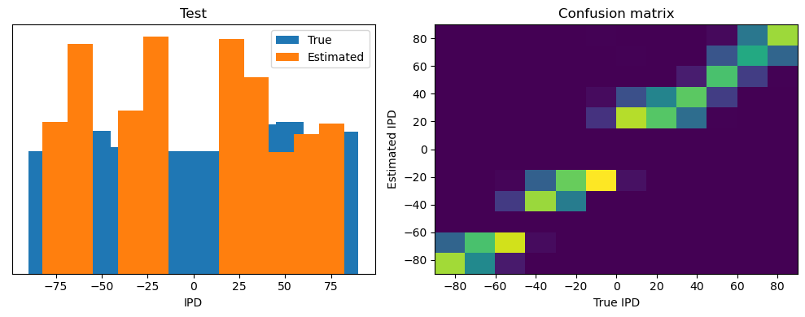
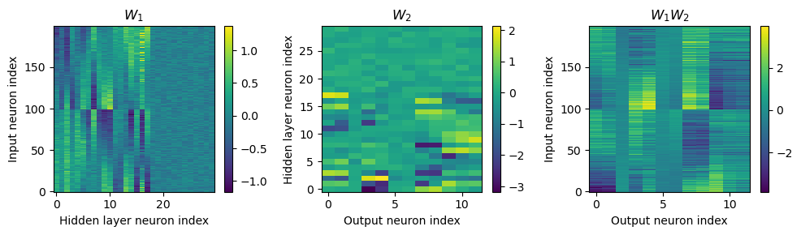
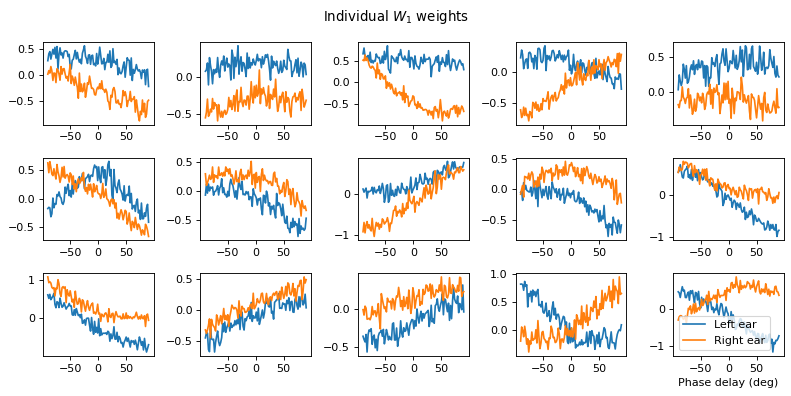
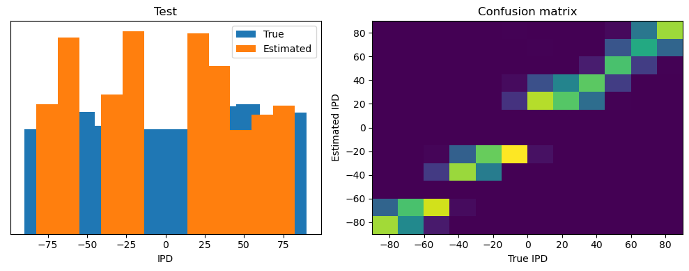
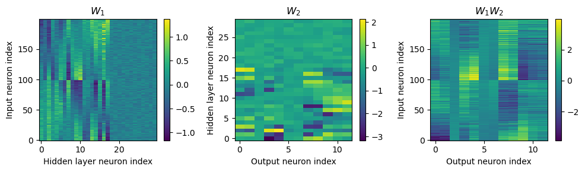
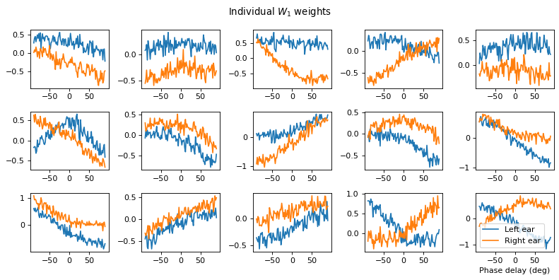
# Training parameters
nb_epochs = 10 # quick, it won't have converged
lr = 0.01 # learning rate
# Generate the training data
ipds, spikes = random_ipd_input_signal(num_samples)
# Initialise a weight matrices
model = snn_fr_2ms()
# Optimiser and loss function
optimizer = torch.optim.Adam(model.parameters(), lr=lr)
log_softmax_fn = nn.LogSoftmax(dim=1)
loss_fn = nn.NLLLoss()
print(f"Want loss for epoch 1 to be about {-np.log(1/num_classes):.2f}, multiply m by constant to get this")
loss_hist = []
for e in range(nb_epochs):
local_loss = []
for x_local, y_local in data_generator(discretise(ipds), spikes):
# Run network
output = model(x_local)
# Compute cross entropy loss
m = torch.mean(output, 1) # Mean across time dimension
loss = loss_fn(log_softmax_fn(m), y_local)
local_loss.append(loss.item())
# Update gradients
optimizer.zero_grad()
loss.backward()
optimizer.step()
loss_hist.append(np.mean(local_loss))
print("Epoch %i: loss=%.5f"%(e+1, np.mean(local_loss)))
# Plot the loss function over time
plt.plot(loss_hist)
plt.xlabel('Epoch')
plt.ylabel('Loss')
plt.tight_layout()
# Analyse
print(f"Chance accuracy level: {100*1/num_classes:.1f}%")
run_func = lambda x: model(x)
acc, err = analyse_vis(ipds, spikes, 'Train', run=run_func)
ipds_test, spikes_test = random_ipd_input_signal(batch_size*n_testing_batches)
acc, err = analyse_vis(ipds_test, spikes_test, 'Test', run=run_func)
W_list = []
for param in model.parameters():
W_list.append(param)
vis(W_list)
Want loss for epoch 1 to be about 2.48, multiply m by constant to get this
Epoch 1: loss=2.38066
Epoch 2: loss=2.28177
Epoch 3: loss=2.25799
Epoch 4: loss=2.24280
Epoch 5: loss=2.23126
Epoch 6: loss=2.22488
Epoch 7: loss=2.21927
Epoch 8: loss=2.21717
Epoch 9: loss=2.21481
Epoch 10: loss=2.21158
Chance accuracy level: 8.3%
Train classifier accuracy: 67.1%
Train absolute error: 6.6 deg
Test classifier accuracy: 63.0%
Test absolute error: 7.2 deg
 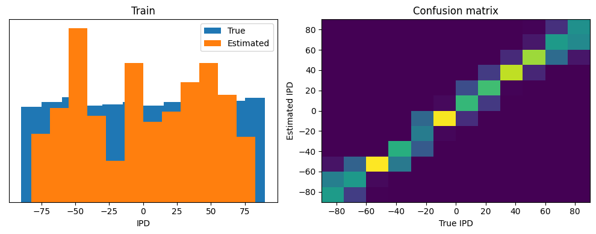
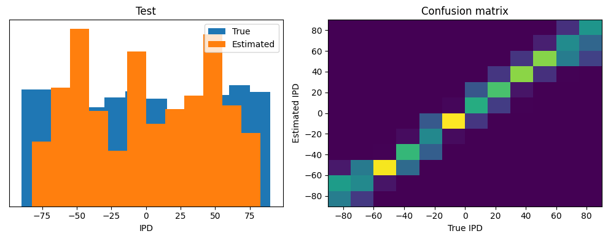
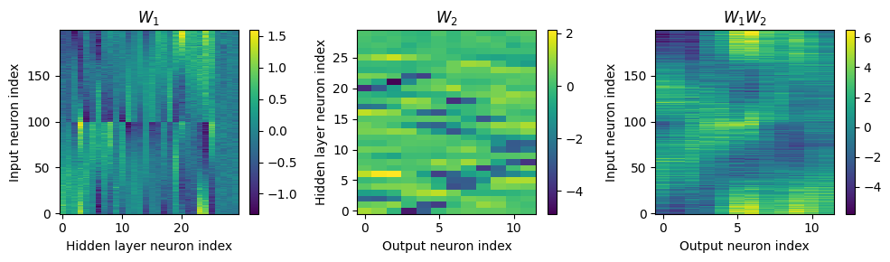
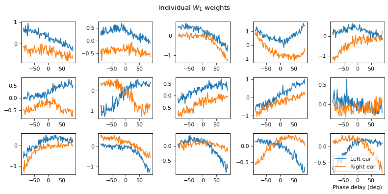
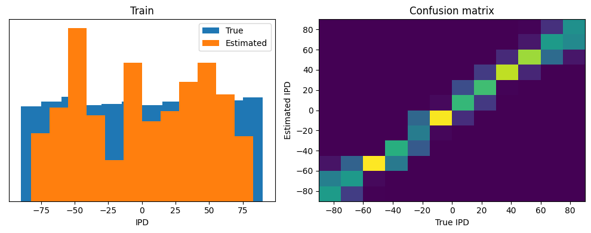
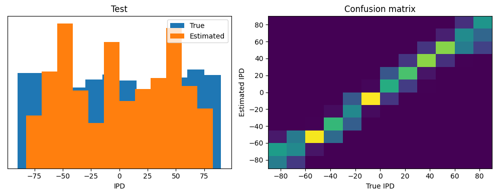
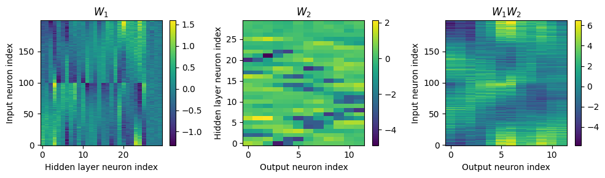
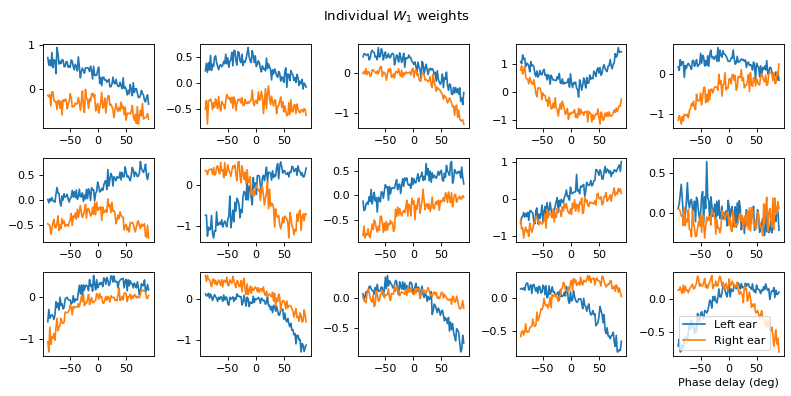
Further Work¶
Altering the encoding of inputs, use other methods to generate input spikes.
Change the neuron models used in the network